Every examples/paper/*.py script registered in examples/paper/manifest.yml, with the figure outputs each produces. Auto-generated from the manifest — re-render with python tools/paper_examples/build_gallery.py.
Question: Do mEPSCs follow constant vs piecewise Poisson firing under Mg2+ washout?
Fits constant and piecewise Poisson GLM baselines to mEPSC spike trains.
Run: python examples/paper/example01_mepsc_poisson.py · Script · Figures directory
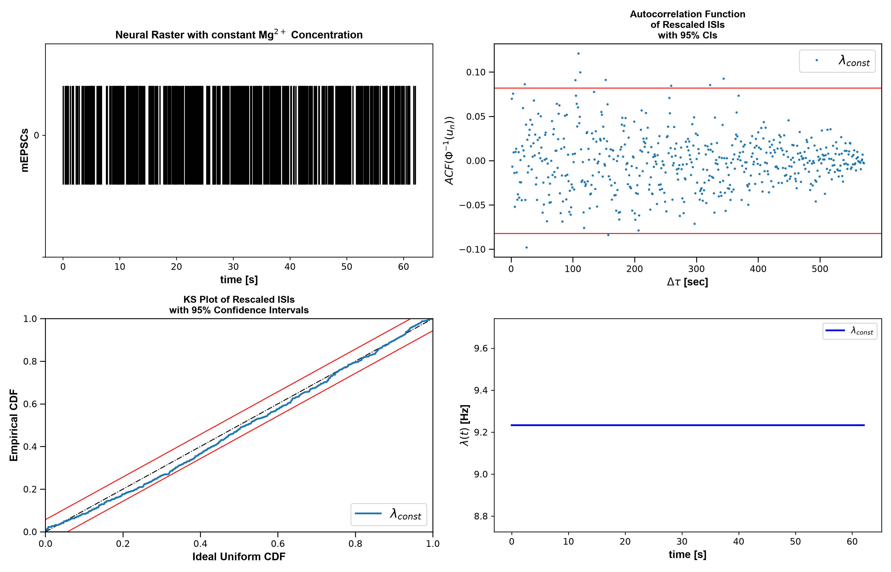
fig1, axes1 = plt.subplots(2, 2, figsize=(14, 9))
ax = axes1[0, 0]
spikeCollConst.plot(handle=ax)
ax.set_title(r"Neural Raster with constant Mg$^{2+}$ Concentration",
fontweight="bold", fontsize=12, fontfamily="Arial")
ax.set_xlabel("time [s]", fontsize=12, fontweight="bold", fontfamily="Arial")
ax.set_ylabel("mEPSCs", fontsize=12, fontweight="bold", fontfamily="Arial")
ax.set_yticks([0, 1])
# Match MATLAB raster: ticks span full panel (linelengths=1.0).
ax.set_ylim(0, 1)
ax = axes1[0, 1]
resultConst.plotInvGausTrans(handle=ax)
ax = axes1[1, 0]
resultConst.KSPlot(handle=ax)
ax = axes1[1, 1]
lam = resultConst.lambda_signal
ax.plot(lam.time, lam.data[:, 0], "b", linewidth=2)
ax.set_xlabel("time [s]", fontsize=12, fontweight="bold", fontfamily="Arial")
ax.set_ylabel(r"$\lambda(t)$ [Hz]" if lam.yunits else r"$\lambda(t)$",
fontsize=12, fontweight="bold", fontfamily="Arial")
ax.legend([r"$\lambda_{const}$"], loc="upper right")
fig1.tight_layout()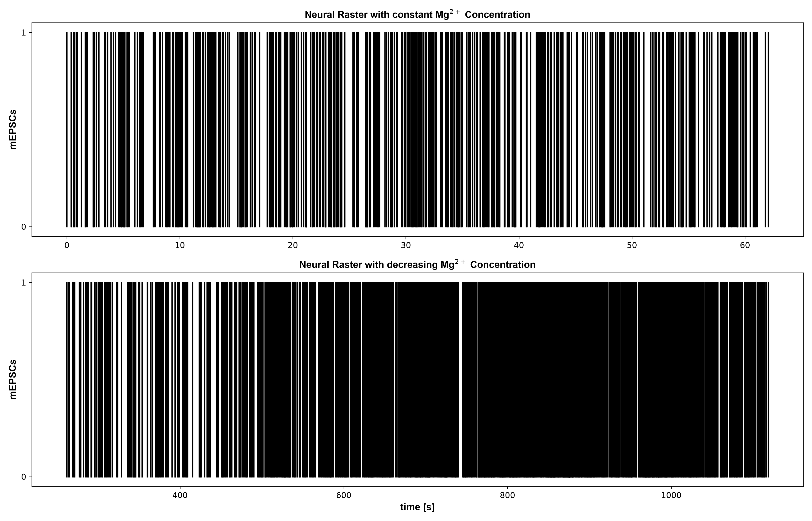
fig2, axes2 = plt.subplots(2, 1, figsize=(14, 9))
ax = axes2[0]
nstConst.plot(handle=ax)
ax.set_yticks([0, 1])
# Match MATLAB raster: ticks span full panel (linelengths=1.0).
ax.set_ylim(0, 1)
ax.set_ylabel("mEPSCs", fontsize=12, fontweight="bold", fontfamily="Arial")
ax.set_title(r"Neural Raster with constant Mg$^{2+}$ Concentration",
fontweight="bold", fontsize=12, fontfamily="Arial")
ax.xaxis.label.set(fontsize=12, fontweight="bold", fontfamily="Arial")
ax = axes2[1]
nstWashout.plot(handle=ax)
ax.set_yticks([0, 1])
ax.set_ylim(0, 1)
ax.set_xlabel("time [s]", fontsize=12, fontweight="bold", fontfamily="Arial")
ax.set_ylabel("mEPSCs", fontsize=12, fontweight="bold", fontfamily="Arial")
ax.set_title(r"Neural Raster with decreasing Mg$^{2+}$ Concentration",
fontweight="bold", fontsize=12, fontfamily="Arial")
ax.xaxis.label.set(fontsize=12, fontweight="bold", fontfamily="Arial")
fig2.tight_layout()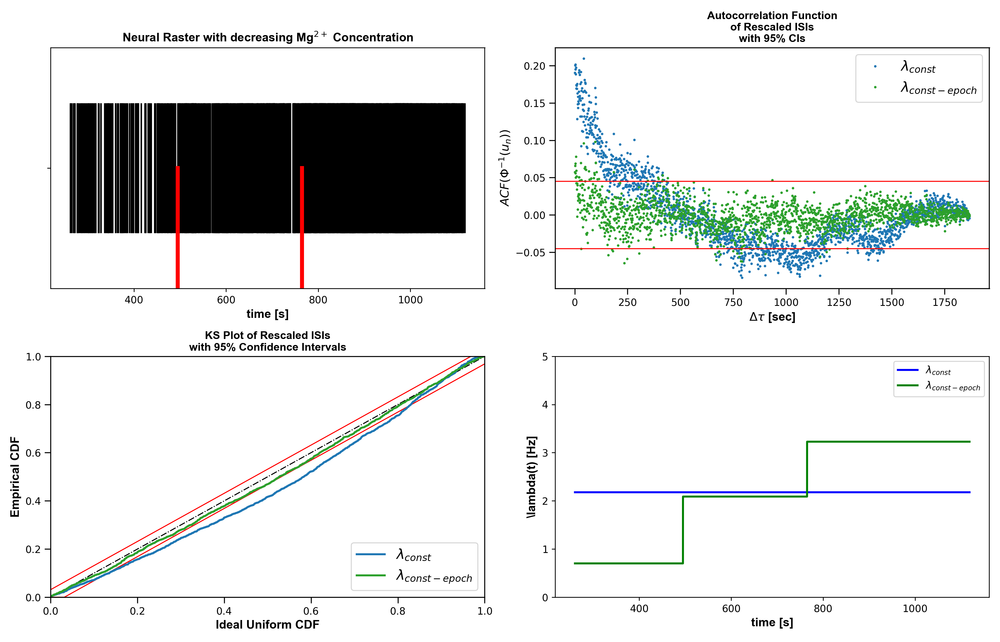
fig3, axes3 = plt.subplots(2, 2, figsize=(14, 9))
ax = axes3[0, 0]
spikeCollWashout.plot(handle=ax)
ax.set_title(r"Neural Raster with decreasing Mg$^{2+}$ Concentration",
fontweight="bold", fontsize=12, fontfamily="Arial")
ax.set_xlabel("time [s]", fontsize=12, fontweight="bold", fontfamily="Arial")
ax.set_yticklabels([])
# Red epoch-transition markers — MATLAB ``plot([495;495],[0,1],'r','LineWidth',4)``
# works on a single-neuron raster where the spike at y=1 sits within [0,1].
# ``nstColl.plot`` in Python centers a 1-neuron raster at ``yOffset=1`` with
# ``dHeight=0.8`` (so y-range [0.6, 1.4]) and sets ``ylim=[0.25, 1.75]``;
# a literal ``plot([t,t],[0,1])`` then stops short of the raster top.
# ``axvline`` spans the full axes (ymin=0, ymax=1 in axes coords) so the
# marker always covers the raster regardless of y-data layout.
ax.axvline(495, color="r", linewidth=4)
ax.axvline(765, color="r", linewidth=4)
ax = axes3[0, 1]
resultWashout.plotInvGausTrans(handle=ax)
ax = axes3[1, 0]
resultWashout.KSPlot(handle=ax)
ax = axes3[1, 1]
lam = resultWashout.lambda_signal
ax.plot(lam.time, lam.getSubSignal(0).data[:, 0], "b", linewidth=2)
ax.plot(lam.time, lam.getSubSignal(1).data[:, 0], "g", linewidth=2)
ax.set_ylim(0, 5)
ax.set_xlabel("time [s]", fontsize=12, fontweight="bold", fontfamily="Arial")
ax.set_ylabel(r"$\lambda(t)$ [Hz]" if lam.yunits else r"$\lambda(t)$",
fontsize=12, fontweight="bold", fontfamily="Arial")
ax.legend([r"$\lambda_{const}$", r"$\lambda_{const-epoch}$"], loc="upper right")
fig3.tight_layout()Question: How do explicit whisker stimulus and spike history improve thalamic GLM fits?
Fits explicit-stimulus point-process GLMs and compares baseline, stimulus, and history models.
Run: python examples/paper/example02_whisker_stimulus_thalamus.py · Script · Figures directory
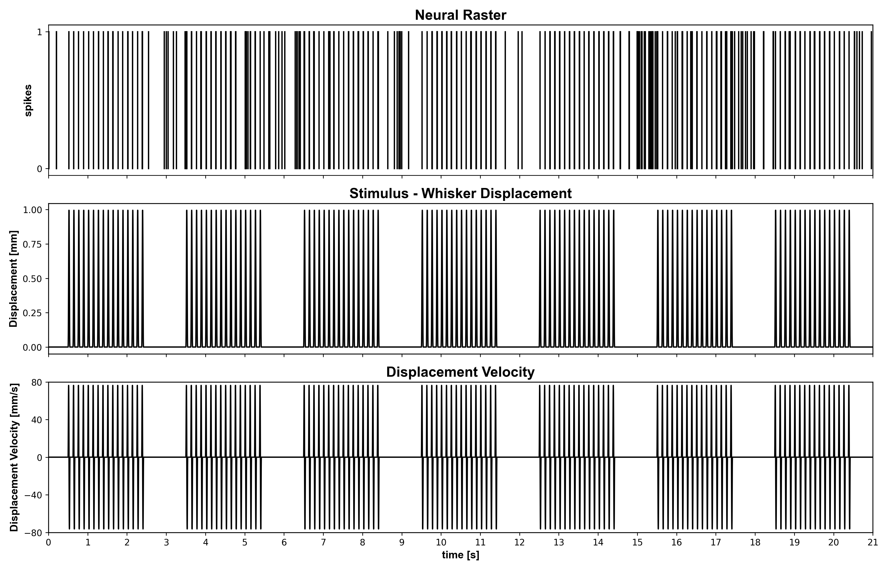
fig1, axes1 = plt.subplots(3, 1, figsize=(14, 9))
viewWindow = 21.0 # First 21 seconds, matching Matlab
# Subplot 1: Neural raster (first 21 s)
ax = axes1[0]
nstView = nspikeTrain(spikeTimes)
nstView.setMaxTime(viewWindow)
nstView.plot(handle=ax)
ax.set_yticks([0, 1])
xticks = np.arange(0, int(max(time)) + 1, 1)
ax.set_xticks(xticks)
ax.set_xticklabels([]) # No x-labels on top/middle subplots
ax.set_xlabel("")
ax.set_xlim(0, viewWindow)
ax.set_ylabel("spikes", fontsize=12, fontweight="bold", fontfamily="Arial")
ax.set_title("Neural Raster", fontweight="bold", fontsize=16, fontfamily="Arial")
ax.spines["top"].set_linewidth(1)
ax.spines["right"].set_linewidth(1)
# Subplot 2: Stimulus displacement (first 21 s, black line matching MATLAB)
ax = axes1[1]
stimView = stim.getSigInTimeWindow(0, viewWindow)
ax.plot(stimView.time, stimView.data[:, 0], "k")
ax.legend().set_visible(False) if ax.get_legend() else None
ax.set_yticks(np.arange(0, 1.25, 0.25))
ax.set_xticks(xticks)
ax.set_xticklabels([])
ax.set_xlabel("")
ax.set_xlim(0, viewWindow)
ax.set_ylabel("Displacement [mm]", fontsize=12, fontweight="bold", fontfamily="Arial")
ax.set_title("Stimulus - Whisker Displacement", fontweight="bold", fontsize=16, fontfamily="Arial")
for spine in ax.spines.values():
spine.set_linewidth(1)
# Subplot 3: Stimulus velocity (derivative, first 21 s, black line matching MATLAB)
ax = axes1[2]
stimDeriv = stim.derivative()
stimDerivView = stimDeriv.getSigInTimeWindow(0, viewWindow)
ax.plot(stimDerivView.time, stimDerivView.data[:, 0], "k")
ax.set_yticks(np.arange(-80, 81, 40))
ax.set_xticks(xticks)
ax.set_xlim(0, viewWindow)
ax.set_ylim(-80, 80)
ax.set_ylabel("Displacement Velocity [mm/s]", fontsize=12, fontweight="bold", fontfamily="Arial")
ax.set_xlabel("time [s]", fontsize=12, fontweight="bold", fontfamily="Arial")
ax.set_title("Displacement Velocity", fontweight="bold", fontsize=16, fontfamily="Arial")
for spine in ax.spines.values():
spine.set_linewidth(1)
fig1.tight_layout()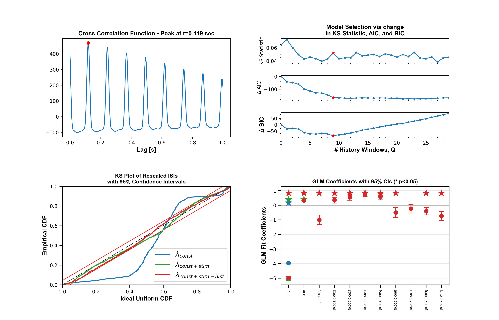
fig2 = plt.figure(figsize=(14, 9))
import matplotlib.gridspec as gridspec
gs = gridspec.GridSpec(7, 2, figure=fig2, hspace=0.5, wspace=0.3)
numResults = len(ksArr)
# --- Left column, rows 1-3: Cross-correlation function ---
ax_xcov = fig2.add_subplot(gs[0:3, 0])
xcovWindowed.plot(handle=ax_xcov)
ax_xcov.plot(shiftTime, peakVal, "ro", linewidth=3,
markerfacecolor="r", markeredgecolor="r")
ax_xcov.set_title(
f"Cross Correlation Function - Peak at t={shiftTime:g} sec",
fontweight="bold", fontsize=12, fontfamily="Arial")
ax_xcov.set_xlabel("Lag [s]", fontsize=12, fontweight="bold", fontfamily="Arial")
ax_xcov.set_ylabel("")
# --- Right column, row 1: KS statistic vs Q ---
ax_ks_sweep = fig2.add_subplot(gs[0, 1])
xvals = np.arange(numResults)
ax_ks_sweep.plot(xvals, ksArr, ".-")
if windowIndex < numResults:
ax_ks_sweep.plot(xvals[windowIndex], ksArr[windowIndex], "r*")
ax_ks_sweep.set_xlim(xvals[0], xvals[-1])
ax_ks_sweep.set_xticks(np.arange(0, numResults, 5))
ax_ks_sweep.set_xticklabels([])
ax_ks_sweep.tick_params(length=4, which="major")
ax_ks_sweep.minorticks_on()
ax_ks_sweep.set_ylabel("KS Statistic")
ax_ks_sweep.set_title("Model Selection via change\nin KS Statistic, AIC, and BIC",
fontweight="bold", fontsize=12, fontfamily="Arial")
# --- Right column, row 2: Delta AIC vs Q ---
ax_daic = fig2.add_subplot(gs[1, 1])
dAIC_full = aicArr - aicArr[0]
ax_daic.plot(np.arange(len(dAIC_full)), dAIC_full, ".-")
if windowIndex < len(dAIC_full):
ax_daic.plot(windowIndex, dAIC_full[windowIndex], "r*")
ax_daic.set_xlim(0, numResults - 1)
ax_daic.set_xticks(np.arange(0, numResults, 5))
ax_daic.set_xticklabels([])
ax_daic.tick_params(length=4, which="major")
ax_daic.minorticks_on()
ax_daic.set_ylabel(r"$\Delta$ AIC")
# --- Right column, row 3: Delta BIC vs Q ---
ax_dbic = fig2.add_subplot(gs[2, 1])
dBIC_full = bicArr - bicArr[0]
ax_dbic.plot(np.arange(len(dBIC_full)), dBIC_full, ".-")
if windowIndex < len(dBIC_full):
ax_dbic.plot(windowIndex, dBIC_full[windowIndex], "r*")
ax_dbic.set_xlim(0, numResults - 1)
ax_dbic.set_xticks(np.arange(0, numResults, 5))
ax_dbic.tick_params(length=4, which="major")
ax_dbic.minorticks_on()
ax_dbic.set_xlabel("# History Windows, Q",
fontsize=12, fontweight="bold", fontfamily="Arial")
ax_dbic.set_ylabel(r"$\Delta$ BIC",
fontsize=12, fontweight="bold", fontfamily="Arial")
# --- Left column, rows 5-7: KS plot (3 models) ---
ax_ks = fig2.add_subplot(gs[4:7, 0])
modelCompare.KSPlot(handle=ax_ks)
# --- Right column, rows 5-7: Coefficient comparison ---
ax_coeff = fig2.add_subplot(gs[4:7, 1])
modelCompare.plotCoeffs(handle=ax_coeff)
if ax_coeff.get_legend():
ax_coeff.get_legend().set_visible(False)Question: How do PSTH and SSGLM capture within-trial and across-trial dynamics?
Bundles simulated PSTH and SSGLM examples from the canonical paper workflow.
Run: python examples/paper/example03_psth_and_ssglm.py · Script · Figures directory
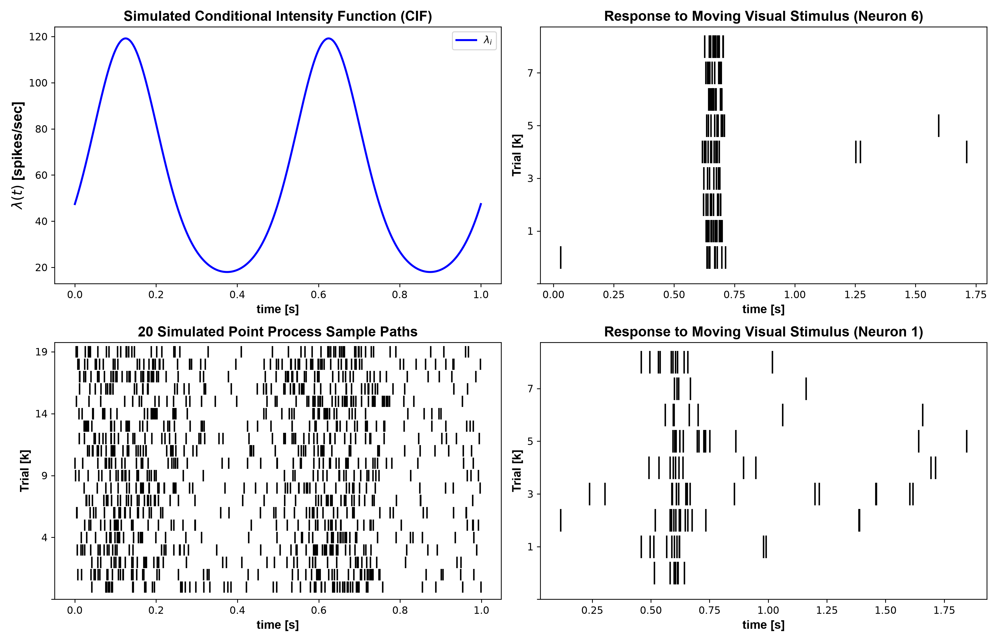
fig1, axes1 = plt.subplots(2, 2, figsize=(14, 9))
# Top-left: CIF
ax = axes1[0, 0]
ax.plot(time, lambdaData, "b", linewidth=2, label=r"$\lambda_i$")
ax.set_title("Simulated Conditional Intensity Function (CIF)",
fontweight="bold", fontsize=14, fontfamily="Arial")
ax.set_xlabel("time [s]", fontsize=12, fontweight="bold", fontfamily="Arial")
ax.set_ylabel(r"$\lambda(t)$ [spikes/sec]", fontsize=14, fontweight="bold",
fontfamily="Arial")
ax.legend(loc="upper right")
# Bottom-left: simulated raster
ax = axes1[1, 0]
spikeCollSim.plot(handle=ax)
ax.set_yticks(range(0, numRealizations + 1, 5))
ax.set_title(f"{numRealizations} Simulated Point Process Sample Paths",
fontweight="bold", fontsize=14, fontfamily="Arial")
ax.set_xlabel("time [s]", fontsize=12, fontweight="bold", fontfamily="Arial")
ax.set_ylabel("Trial [k]", fontsize=12, fontweight="bold", fontfamily="Arial")
# Top-right: real cell 6 raster
ax = axes1[0, 1]
spikeCollReal1.plot(handle=ax)
ax.set_yticks(range(0, numTrials + 1, 2))
ax.set_title("Response to Moving Visual Stimulus (Neuron 6)",
fontweight="bold", fontsize=14, fontname="Arial")
ax.set_xlabel("time [s]", fontname="Arial", fontsize=12, fontweight="bold")
ax.set_ylabel("Trial [k]", fontname="Arial", fontsize=12, fontweight="bold")
# Bottom-right: real cell 1 raster
ax = axes1[1, 1]
spikeCollReal2.plot(handle=ax)
ax.set_yticks(range(0, numTrials + 1, 2))
ax.set_title("Response to Moving Visual Stimulus (Neuron 1)",
fontweight="bold", fontsize=14, fontname="Arial")
ax.set_xlabel("time [s]", fontname="Arial", fontsize=12, fontweight="bold")
ax.set_ylabel("Trial [k]", fontname="Arial", fontsize=12, fontweight="bold")
fig1.tight_layout()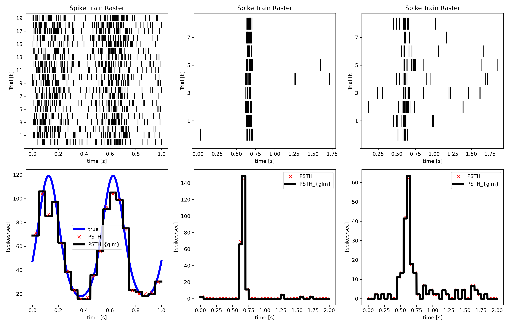
fig2, axes2 = plt.subplots(2, 3, figsize=(14, 9))
# Top row: rasters
spikeCollSim.plot(handle=axes2[0, 0])
axes2[0, 0].set_yticks(range(0, numRealizations + 1, 2))
axes2[0, 0].set_xlabel("time [s]")
axes2[0, 0].set_ylabel("Trial [k]")
spikeCollReal1.plot(handle=axes2[0, 1])
axes2[0, 1].set_yticks(range(0, numTrials + 1, 2))
axes2[0, 1].set_xlabel("time [s]")
axes2[0, 1].set_ylabel("Trial [k]")
spikeCollReal2.plot(handle=axes2[0, 2])
axes2[0, 2].set_yticks(range(0, numTrials + 1, 2))
axes2[0, 2].set_xlabel("time [s]")
axes2[0, 2].set_ylabel("Trial [k]")
# Bottom row: PSTH comparisons
ax = axes2[1, 0]
h_true, = ax.plot(time, lambdaData, "b", linewidth=4, label="true")
# MATLAB z-order: true, then GLM, then PSTH (markers on top)
glm_time = np.asarray(psthGLMSim.time, dtype=float).ravel()
glm_data = np.asarray(psthGLMSim.data, dtype=float).ravel()
h_glm, = ax.plot(glm_time, glm_data, "k", linewidth=4, label="PSTH_{glm}")
psth_time = np.asarray(psthSim.time, dtype=float).ravel()
psth_data = np.asarray(psthSim.data, dtype=float).ravel()
h_psth, = ax.plot(psth_time, psth_data, "rx", linewidth=4, label="PSTH")
ax.legend(handles=[h_true, h_psth, h_glm])
ax.set_xlabel("time [s]")
ax.set_ylabel("[spikes/sec]")
ax = axes2[1, 1]
psth_t1 = np.asarray(psthReal1.time, dtype=float).ravel()
psth_d1 = np.asarray(psthReal1.data, dtype=float).ravel()
glm_t1 = np.asarray(psthGLMReal1.time, dtype=float).ravel()
glm_d1 = np.asarray(psthGLMReal1.data, dtype=float).ravel()
h2, = ax.plot(psth_t1, psth_d1, "rx", linewidth=4, label="PSTH")
h3, = ax.plot(glm_t1, glm_d1, "k", linewidth=4, label="PSTH_{glm}")
ax.legend(handles=[h2, h3])
ax.set_xlabel("time [s]")
ax.set_ylabel("[spikes/sec]")
ax = axes2[1, 2]
psth_t2 = np.asarray(psthReal2.time, dtype=float).ravel()
psth_d2 = np.asarray(psthReal2.data, dtype=float).ravel()
glm_t2 = np.asarray(psthGLMReal2.time, dtype=float).ravel()
glm_d2 = np.asarray(psthGLMReal2.data, dtype=float).ravel()
h2, = ax.plot(psth_t2, psth_d2, "rx", linewidth=4, label="PSTH")
h3, = ax.plot(glm_t2, glm_d2, "k", linewidth=4, label="PSTH_{glm}")
ax.legend(handles=[h2, h3])
ax.set_xlabel("time [s]")
ax.set_ylabel("[spikes/sec]")
fig2.tight_layout()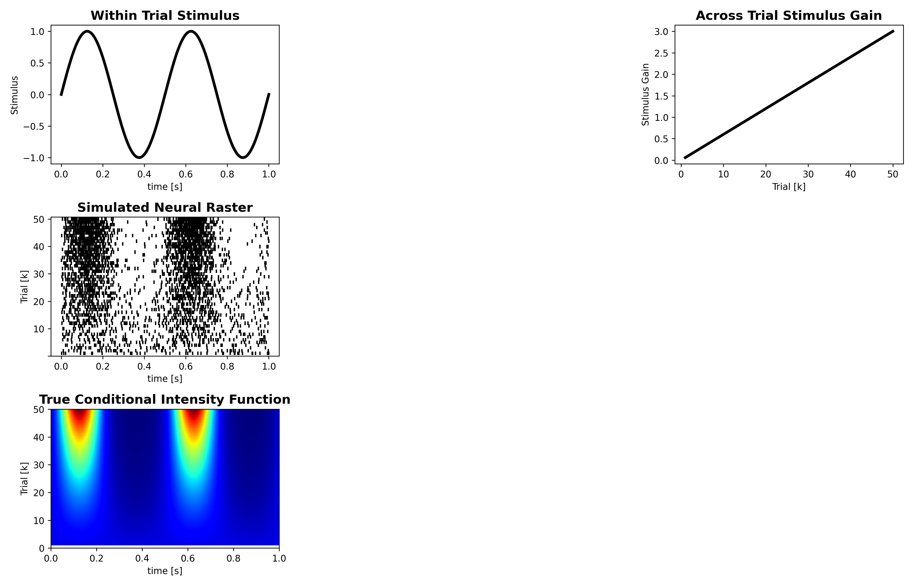
# Layout: row 0 = 2 side-by-side panels; rows 1 and 2 each span full width.
# GridSpec is used (rather than plt.subplots) so the row-spanning panels
# (raster, CIF heatmap) occupy the full figure width cleanly without
# post-hoc set_position() hacks.
from matplotlib.gridspec import GridSpec
fig3 = plt.figure(figsize=(14, 9))
gs3 = GridSpec(3, 2, figure=fig3)
# (Row 0, Col 0): Within-trial stimulus
ax = fig3.add_subplot(gs3[0, 0])
ax.plot(time, u, "k", linewidth=3)
ax.set_xlabel("time [s]")
ax.set_ylabel("Stimulus")
ax.set_title("Within Trial Stimulus", fontweight="bold", fontsize=14)
# (Row 0, Col 1): Across-trial gain
ax = fig3.add_subplot(gs3[0, 1])
ax.plot(np.arange(1, numRealizations + 1), b1, "k", linewidth=3)
ax.set_xlabel("Trial [k]")
ax.set_ylabel("Stimulus Gain")
ax.set_title("Across Trial Stimulus Gain", fontweight="bold", fontsize=14)
# (Row 1): Raster spanning both columns
ax = fig3.add_subplot(gs3[1, :])
spikeColl.plot(handle=ax)
ax.set_yticks(range(0, numRealizations + 1, 10))
ax.set_xlabel("time [s]")
ax.set_ylabel("Trial [k]")
ax.set_title("Simulated Neural Raster", fontweight="bold", fontsize=14)
# (Row 2): True CIF heatmap spanning both columns
ax = fig3.add_subplot(gs3[2, :])
im = ax.imshow(stimData.T, aspect="auto", origin="lower",
extent=[time[0], time[-1], 1, numRealizations],
cmap="jet") # MATLAB default colormap for imagesc
fig3.colorbar(im, ax=ax, fraction=0.046, pad=0.04,
label="Firing Rate [Hz]")
ax.set_xlabel("time [s]")
ax.set_ylabel("Trial [k]")
ax.set_title("True Conditional Intensity Function", fontweight="bold",
fontsize=14)
ax.set_yticks(range(0, numRealizations + 1, 10))
fig3.tight_layout()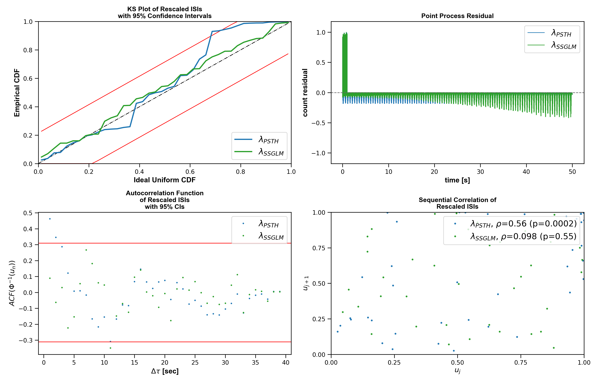
fig4, axes4 = plt.subplots(2, 2, figsize=(14, 9))
tCompare.KSPlot(handle=axes4[0, 0])
tCompare.plotResidual(handle=axes4[0, 1])
tCompare.plotInvGausTrans(handle=axes4[1, 0])
tCompare.plotSeqCorr(handle=axes4[1, 1])
fig4.tight_layout()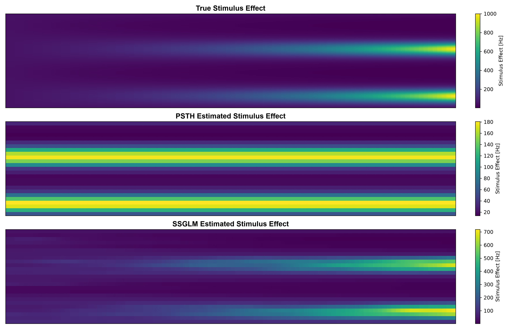
fig5, axes5 = plt.subplots(3, 1, figsize=(14, 9))
trial_axis = np.arange(1, numRealizations + 1)
T_act = min(actStimEffect.shape[0], len(basis_time))
surfaces = [
("True Stimulus Effect", actStimEffect[:T_act, :]),
("PSTH Estimated Stimulus Effect", psthSurface2D[:T_act, :]),
("SSGLM Estimated Stimulus Effect", estStimEffect[:T_act, :]),
]
for ax, (title, data) in zip(axes5, surfaces):
# MATLAB mesh(trial, time, data) viewed from above: x=trial, y=time
im = ax.pcolormesh(trial_axis, basis_time[:T_act], data,
shading="gouraud", cmap="viridis")
fig5.colorbar(im, ax=ax, fraction=0.046, pad=0.04,
label="Stimulus Effect [Hz]")
ax.set_xticks([])
ax.set_yticks([])
ax.set_title(title, fontweight="bold", fontsize=14, fontfamily="Arial")
fig5.tight_layout()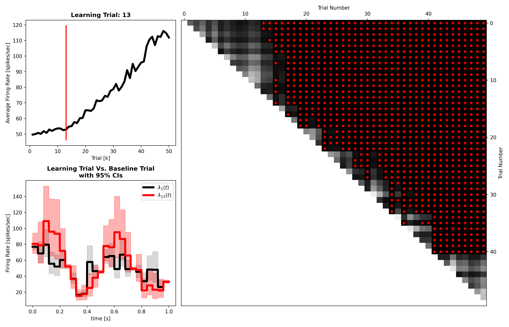
fig6 = plt.figure(figsize=(14, 9))
# (1,1): average spike rate with learning trial marker
ax1 = fig6.add_subplot(2, 3, 1)
rate_time = np.asarray(tRate.time, dtype=float).ravel()
rate_data = np.asarray(tRate.data, dtype=float).ravel()
ax1.plot(rate_time, rate_data, "k", linewidth=4)
ylims = ax1.get_ylim()
ax1.plot([lt, lt], ylims, "r", linewidth=2)
ax1.set_xlabel("Trial [k]")
ax1.set_ylabel("Average Firing Rate [spikes/sec]")
ax1.set_title(f"Learning Trial: {lt}", fontweight="bold", fontsize=12)
# (1,2)+(1,3)+(2,2)+(2,3): significance matrix
ax2 = fig6.add_subplot(2, 3, (2, 6))
ax2.imshow(probMat, cmap="gray_r", aspect="auto")
kTrials = sigMat.shape[0]
for k in range(kTrials):
for m in range(k + 1, kTrials):
if sigMat[k, m] == 1:
ax2.plot(m, k, "r*", markersize=6)
ax2.xaxis.set_ticks_position("top")
ax2.xaxis.set_label_position("top")
ax2.yaxis.set_ticks_position("right")
ax2.yaxis.set_label_position("right")
ax2.set_xlabel("Trial Number")
ax2.set_ylabel("Trial Number")
# (2,1): CIF comparison for trial 1 vs learning trial
ax3 = fig6.add_subplot(2, 3, 4)
stim1_data = basisMat @ stimulus_true[:, 0]
stimlt_data = basisMat @ stimulus_true[:, lt - 1]
ci1_lo = basisMat @ stimCIs[:, 0, 0]
ci1_hi = basisMat @ stimCIs[:, 0, 1]
cilt_lo = basisMat @ stimCIs[:, lt - 1, 0]
cilt_hi = basisMat @ stimCIs[:, lt - 1, 1]
ax3.fill_between(basis_time, ci1_lo, ci1_hi, alpha=0.3, color="gray")
ax3.fill_between(basis_time, cilt_lo, cilt_hi, alpha=0.3, color="red")
h1, = ax3.plot(basis_time, stim1_data, "k", linewidth=4,
label=r"$\lambda_1(t)$")
h2, = ax3.plot(basis_time, stimlt_data, "r", linewidth=4,
label=rf"$\lambda_{{{lt}}}(t)$")
ax3.legend(handles=[h1, h2])
ax3.set_xlabel("time [s]")
ax3.set_ylabel("Firing Rate [spikes/sec]")
ax3.set_title("Learning Trial Vs. Baseline Trial\nwith 95% CIs",
fontweight="bold", fontsize=12)
fig6.tight_layout()Question: Which receptive-field basis (Gaussian vs Zernike) better fits place cells?
Loads place-cell datasets and compares receptive-field model families.
Run: python examples/paper/example04_place_cells_continuous_stimulus.py · Script · Figures directory
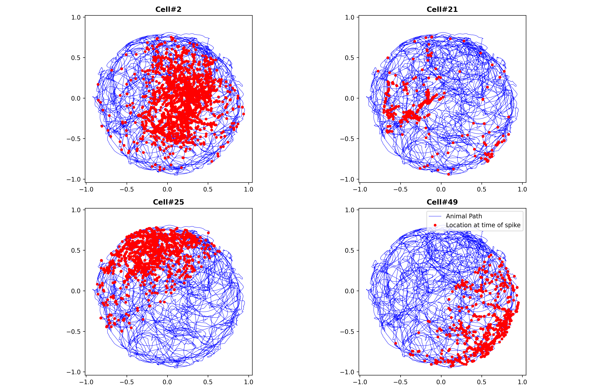
fig1, axes1 = plt.subplots(2, 2, figsize=(14, 9)) # MATLAB: 1400x900
for i, cidx in enumerate(exampleCells):
ax = axes1.flat[i]
h1, = ax.plot(x1, y1, "b-", linewidth=0.5)
n = neurons1[min(cidx, nCells1 - 1)]
xn = np.asarray(n["xN"].item(), dtype=float).ravel()
yn = np.asarray(n["yN"].item(), dtype=float).ravel()
h2, = ax.plot(xn, yn, "r.", markersize=7)
ax.set_title(f"Cell#{cidx + 1}", fontweight="bold", fontsize=12)
ax.set_xticks(np.arange(-1, 1.5, 0.5))
ax.set_yticks(np.arange(-1, 1.5, 0.5))
ax.set_aspect("equal")
ax.axis("square")
# Label only the outer axes in the 2x2 grid to keep the panels clean:
# left column (i=0, 2) gets the Y-Position label, bottom row (i=2, 3)
# gets the X-Position label.
if i in (0, 2):
ax.set_ylabel("Y Position", fontweight="bold", fontsize=12)
if i in (2, 3):
ax.set_xlabel("X Position", fontweight="bold", fontsize=12)
if i == 3:
ax.legend([h1, h2], ["Animal Path", "Location at time of spike"])
fig1.tight_layout()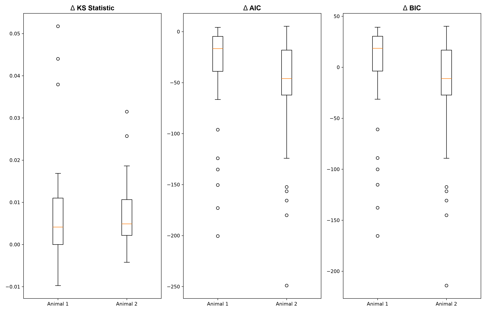
fig2, axes2 = plt.subplots(1, 3, figsize=(14, 9)) # MATLAB: 1400x900
axes2[0].boxplot([dKS1[np.isfinite(dKS1)], dKS2[np.isfinite(dKS2)]],
**_boxplot_labels(["Animal 1", "Animal 2"]),
vert=True)
axes2[0].set_title(r"$\Delta$ KS Statistic", fontsize=14, fontweight="bold",
fontfamily="Arial")
axes2[1].boxplot([dAIC1[np.isfinite(dAIC1)], dAIC2[np.isfinite(dAIC2)]],
**_boxplot_labels(["Animal 1", "Animal 2"]),
vert=True)
axes2[1].set_title(r"$\Delta$ AIC", fontsize=14, fontweight="bold",
fontfamily="Arial")
axes2[2].boxplot([dBIC1[np.isfinite(dBIC1)], dBIC2[np.isfinite(dBIC2)]],
**_boxplot_labels(["Animal 1", "Animal 2"]),
vert=True)
axes2[2].set_title(r"$\Delta$ BIC", fontsize=14, fontweight="bold",
fontfamily="Arial")
fig2.tight_layout()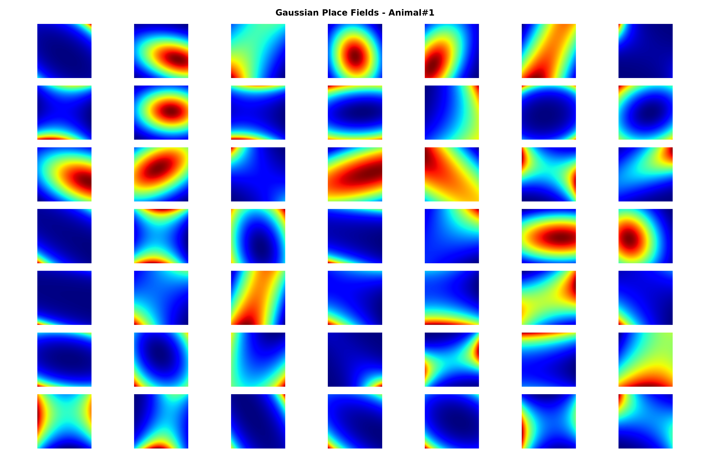
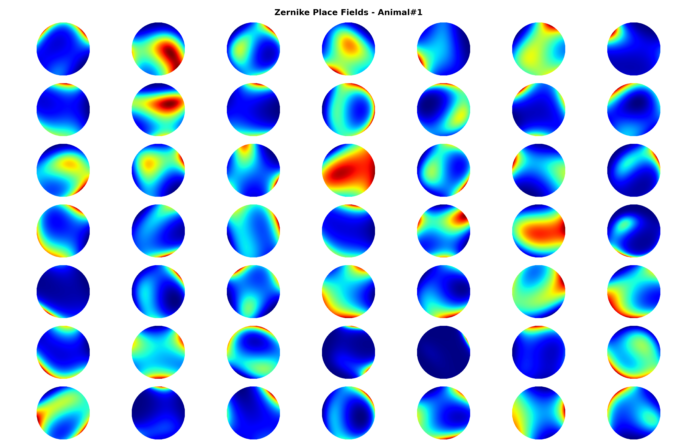
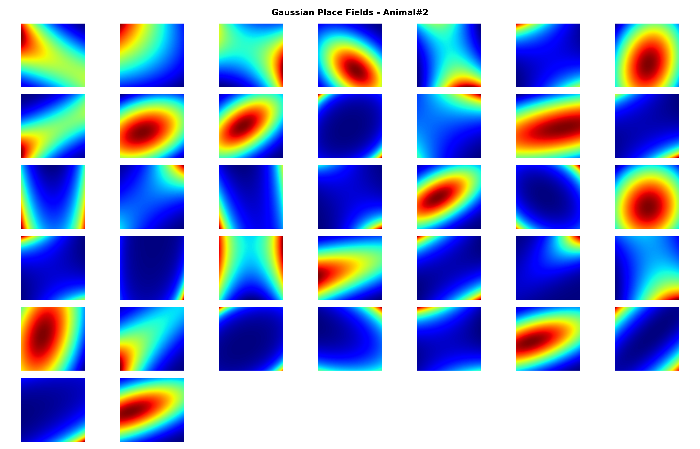
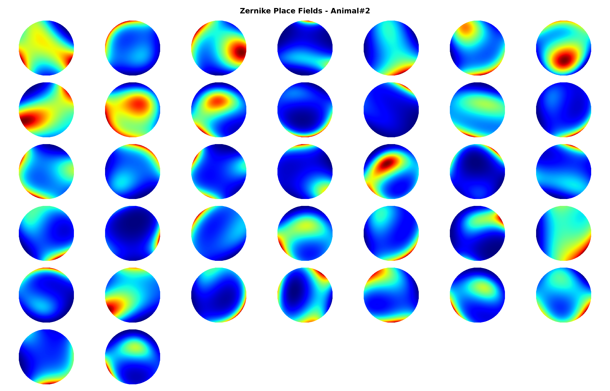
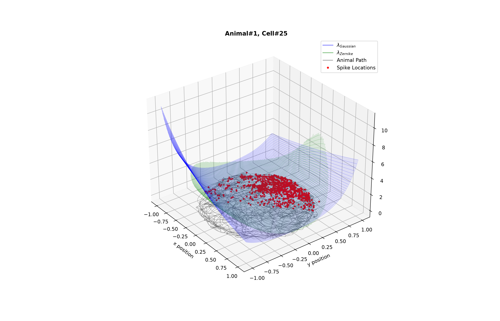
fig7 = plt.figure(figsize=(14, 9))
ax3d = fig7.add_subplot(111, projection="3d")
# MATLAB ``HippocampalPlaceCellExample.m:240-246``: each mesh uses
# default ``mesh(...)`` with ``FaceAlpha=0.2, EdgeAlpha=0.2`` and an
# explicit ``EdgeColor`` ('b' / 'g'). MATLAB's default stride is 1
# so every grid edge appears. Use ``rstride=2, cstride=2`` here
# (every other line) to keep the figure size reasonable on the 201x201
# grid while preserving enough detail for the place-field bump to be
# visible.
ax3d.plot_wireframe(xx, yy, field_g, color="b", alpha=0.35,
rstride=2, cstride=2, linewidth=0.45)
ax3d.plot_wireframe(xx, yy, field_z, color="g", alpha=0.35,
rstride=2, cstride=2, linewidth=0.45)
# Overlay animal path at z=0 (MATLAB: 'k')
ax3d.plot(x1, y1, np.zeros_like(x1), "k-", linewidth=0.4, alpha=0.5)
# Overlay spike locations (MATLAB: 'r.')
n_ex = neurons1[exampleCell]
xn_ex = np.asarray(n_ex["xN"].item(), dtype=float).ravel()
yn_ex = np.asarray(n_ex["yN"].item(), dtype=float).ravel()
ax3d.scatter(xn_ex, yn_ex, np.zeros_like(xn_ex), c="r", s=6)
# Match MATLAB's default 3D view: az=-37.5, el=30
ax3d.view_init(elev=30, azim=-37.5)
ax3d.set_xlabel("x position")
ax3d.set_ylabel("y position")
ax3d.set_title(f"Animal#1, Cell#{exampleCell + 1}",
fontweight="bold", fontsize=12)
# MATLAB legend (wireframe lines, not filled patches)
from matplotlib.lines import Line2D
legend_elements = [
Line2D([0], [0], color="b", alpha=0.5, linewidth=1.5,
label=r"$\lambda_{Gaussian}$"),
Line2D([0], [0], color="g", alpha=0.5, linewidth=1.5,
label=r"$\lambda_{Zernike}$"),
Line2D([0], [0], color="k", linewidth=0.5, label="Animal Path"),
Line2D([0], [0], marker=".", color="r", linestyle="",
label="Spike Locations"),
]
ax3d.legend(handles=legend_elements, loc="best")Question: How well do adaptive/hybrid point-process filters decode stimulus and reach state?
Bundles univariate, reaching, and hybrid decoding examples from the paper workflow.
Run: python examples/paper/example05_decoding_ppaf_pphf.py · Script · Figures directory
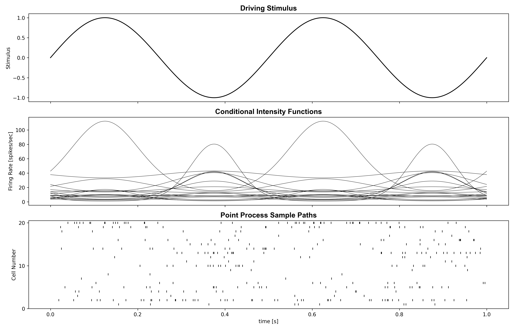
fig1, axes1 = plt.subplots(3, 1, figsize=(14, 9), sharex=True)
# (3,1,1): Driving stimulus
axes1[0].plot(time, stimSignal, "k", linewidth=1.5)
axes1[0].set_ylabel("Stimulus")
axes1[0].set_title("Driving Stimulus", fontweight="bold", fontsize=14,
fontfamily="Arial")
axes1[0].tick_params(labelbottom=False)
# (3,1,2): CIFs overlaid in black
lambdaAll = result["lambdaAll"]
for c in range(n_cells):
axes1[1].plot(time, lambdaAll[c, :], "k", linewidth=0.5)
axes1[1].set_ylabel("Firing Rate [spikes/sec]")
axes1[1].set_title("Conditional Intensity Functions", fontweight="bold",
fontsize=14, fontfamily="Arial")
axes1[1].tick_params(labelbottom=False)
# (3,1,3): Spike raster
for c in range(n_cells):
spike_times = time[dN[c, :] > 0]
axes1[2].plot(spike_times, np.full_like(spike_times, c + 1), "|", color="k", markersize=4)
axes1[2].set_ylabel("Cell Number")
axes1[2].set_xlabel("time [s]")
axes1[2].set_ylim(0.5, n_cells + 0.5)
axes1[2].set_yticks(np.arange(0, n_cells + 1, 10))
axes1[2].set_title("Point Process Sample Paths", fontweight="bold",
fontsize=14, fontfamily="Arial")
fig1.tight_layout()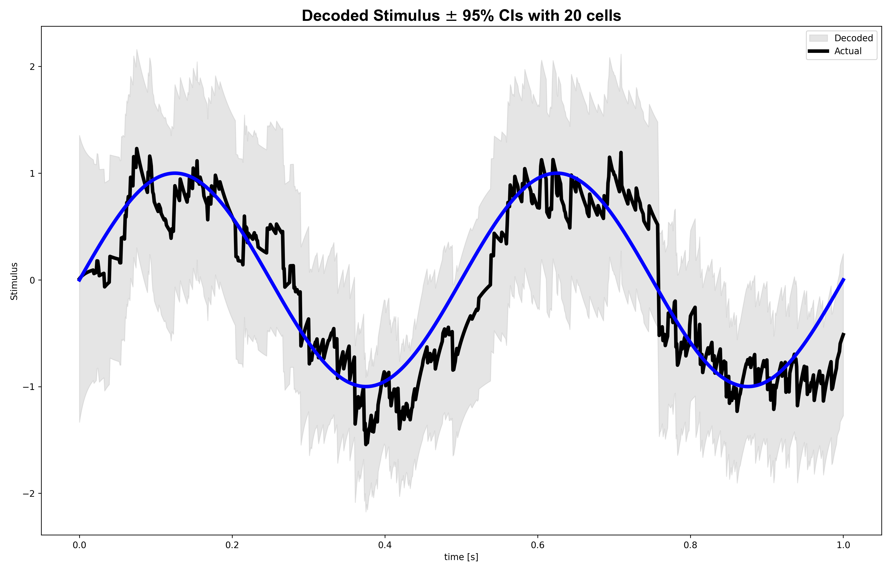
fig2, ax2 = plt.subplots(1, 1, figsize=(14, 9))
ax2.fill_between(
time, result["ci_low"], result["ci_high"],
color="0.75", alpha=0.4, label="95% CI"
)
# Faint spike-raster overlay (population activity context behind the
# decoded sinusoid) — scaled to the stimulus y-range so the rasters
# remain visible without obscuring the decoded trace.
stim_lo = float(np.min(stimSignal))
stim_hi = float(np.max(stimSignal))
stim_span = max(stim_hi - stim_lo, 1e-9)
for c in range(n_cells):
spike_t = time[dN[c, :] > 0]
if spike_t.size == 0:
continue
y = stim_lo + (c + 1) / (n_cells + 1) * stim_span
ax2.plot(spike_t, np.full_like(spike_t, y), "|",
color="0.55", markersize=3, alpha=0.35, zorder=0)
ax2.plot(time, result["x_decoded"], "k-", linewidth=4, label="Decoded")
ax2.plot(time, stimSignal, "b-", linewidth=4, label="Actual")
ax2.set_xlim(time[0], time[-1])
ax2.set_xlabel("Time (s)")
ax2.set_ylabel("Stimulus") # MATLAB: ylabel('Stimulus','Interpreter','none')
ax2.set_title(f"Decoded Stimulus $\\pm$ 95% CIs with {result['n_cells']} cells",
fontweight="bold", fontsize=18, fontfamily="Arial")
ax2.legend(["Decoded", "Actual"], loc="upper right")
fig2.tight_layout()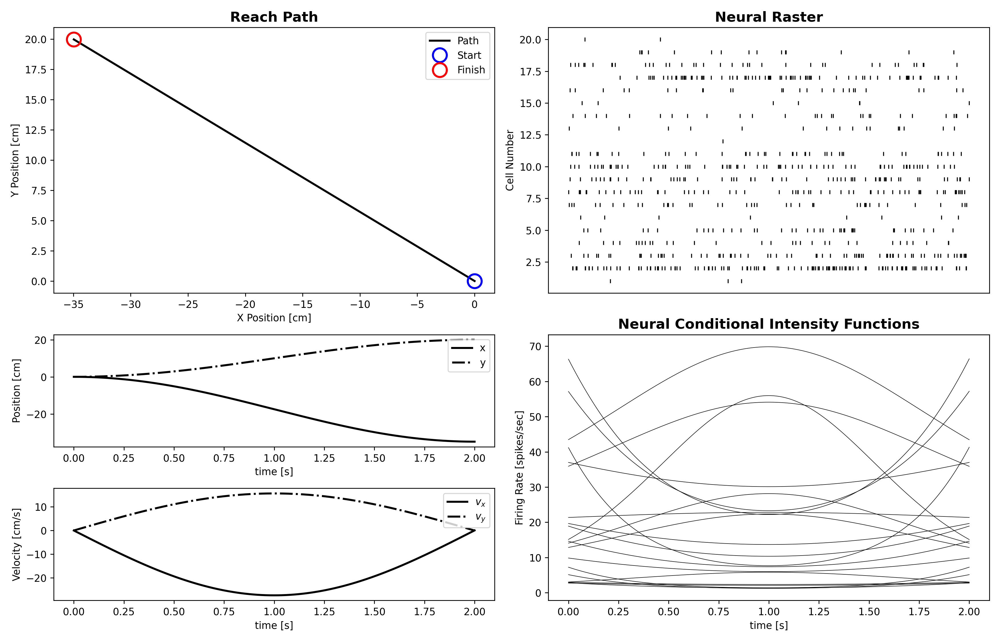
fig3 = plt.figure(figsize=(14, 9))
# Top-left [1,3]: 2D reach path (in cm)
ax_path = fig3.add_subplot(4, 2, (1, 3))
ax_path.plot(100 * xState[0, :], 100 * xState[1, :], "k", linewidth=2)
ax_path.plot(100 * xState[0, 0], 100 * xState[1, 0], "bo", markersize=14,
markerfacecolor="none", markeredgewidth=2)
ax_path.plot(100 * xState[0, -1], 100 * xState[1, -1], "ro", markersize=14,
markerfacecolor="none", markeredgewidth=2)
ax_path.legend(["Path", "Start", "Finish"], loc="upper right")
ax_path.set_xlabel("X Position [cm]")
ax_path.set_ylabel("Y Position [cm]")
ax_path.set_title("Reach Path", fontweight="bold", fontsize=14)
# Middle-left [5]: position vs time (in cm)
ax_pos = fig3.add_subplot(4, 2, 5)
h1, = ax_pos.plot(time, 100 * xState[0, :], "k", linewidth=2)
h2, = ax_pos.plot(time, 100 * xState[1, :], "k-.", linewidth=2)
ax_pos.legend([h1, h2], ["x", "y"], loc="upper right")
ax_pos.set_xlabel("time [s]")
ax_pos.set_ylabel("Position [cm]")
# Lower-left [7]: velocity vs time (in cm/s)
ax_vel = fig3.add_subplot(4, 2, 7)
h1, = ax_vel.plot(time, 100 * xState[2, :], "k", linewidth=2)
h2, = ax_vel.plot(time, 100 * xState[3, :], "k-.", linewidth=2)
ax_vel.legend([h1, h2], ["$v_x$", "$v_y$"], loc="upper right")
ax_vel.set_xlabel("time [s]")
ax_vel.set_ylabel("Velocity [cm/s]")
# Top-right [2,4]: neural raster
ax_raster = fig3.add_subplot(4, 2, (2, 4))
for c in range(n_cells):
spike_t = time[dN[c, :] > 0]
ax_raster.plot(spike_t, np.full_like(spike_t, c + 1), "|", color="k", markersize=4)
ax_raster.set_ylabel("Cell Number")
ax_raster.set_xticks([])
ax_raster.set_xticklabels([])
ax_raster.set_title("Neural Raster", fontweight="bold", fontsize=14)
# Bottom-right [6,8]: CIF curves
ax_cif = fig3.add_subplot(4, 2, (6, 8))
muCoeffs = ex["muCoeffs"]
beta = ex["beta"]
for c in range(n_cells):
eta = muCoeffs[c] + beta[:, c] @ xState
exp_eta = np.exp(np.clip(eta, -20, 20))
lam = (exp_eta / (1.0 + exp_eta)) / delta
ax_cif.plot(time, lam, "k", linewidth=0.5)
ax_cif.set_title("Neural Conditional Intensity Functions",
fontweight="bold", fontsize=14)
ax_cif.set_xlabel("time [s]")
ax_cif.set_ylabel("Firing Rate [spikes/sec]")
fig3.tight_layout()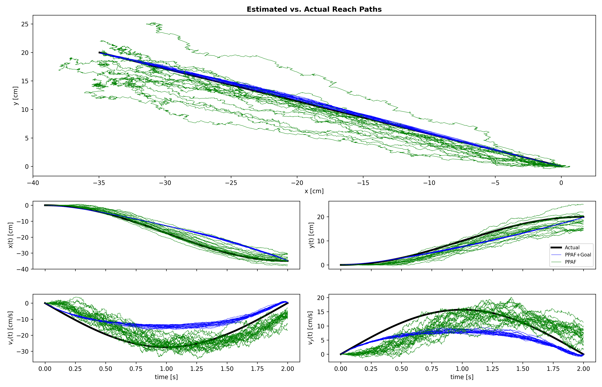
fig4 = plt.figure(figsize=(14, 9))
# Top [1:4]: 2D estimated vs actual reach paths
ax_2d = fig4.add_subplot(4, 2, (1, 4))
ax_2d.plot(100 * xState[0, :], 100 * xState[1, :], "k", linewidth=3)
ax_2d.set_title("Estimated vs. Actual Reach Paths",
fontweight="bold", fontsize=12)
for sim_idx in range(result["n_sims"]):
x_u_goal = result["all_runs_goal"][sim_idx]
x_u_free = result["all_runs_free"][sim_idx]
ax_2d.plot(100 * x_u_goal[0, :], 100 * x_u_goal[1, :], "b", linewidth=0.5)
ax_2d.plot(100 * x_u_free[0, :], 100 * x_u_free[1, :], "g", linewidth=0.5)
ax_2d.set_xlabel("x [cm]")
ax_2d.set_ylabel("y [cm]")
# Bottom panels: per-state traces
state_labels = ["x(t) [cm]", "y(t) [cm]", "$v_x$(t) [cm/s]", "$v_y$(t) [cm/s]"]
subplot_indices = [5, 6, 7, 8]
scale = 100.0 # meters → cm
for d, (sp_idx, ylabel) in enumerate(zip(subplot_indices, state_labels)):
ax = fig4.add_subplot(4, 2, sp_idx)
ax.plot(time, scale * xState[d, :], "k", linewidth=3)
for sim_idx in range(result["n_sims"]):
x_u_goal = result["all_runs_goal"][sim_idx]
x_u_free = result["all_runs_free"][sim_idx]
hB, = ax.plot(time, scale * x_u_goal[d, :], "b", linewidth=0.5)
hC, = ax.plot(time, scale * x_u_free[d, :], "g", linewidth=0.5)
ax.set_ylabel(ylabel)
if d >= 2:
ax.set_xlabel("time [s]")
else:
ax.set_xticklabels([])
# Add legend on y(t) panel (subplot 6), matching MATLAB
if d == 1:
hA, = ax.plot([], [], "k", linewidth=3)
ax.legend([hA, hB, hC], ["Actual", "PPAF+Goal", "PPAF"],
loc="lower right", fontsize=8)
fig4.tight_layout()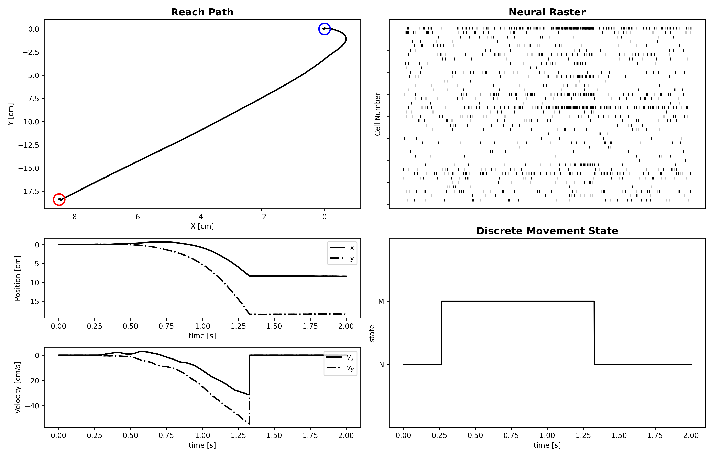
fig5 = plt.figure(figsize=(14, 9))
# Top-left [1,3]: 2D reach path
ax_path = fig5.add_subplot(4, 2, (1, 3))
ax_path.plot(100 * X[0, :], 100 * X[1, :], "k", linewidth=2)
ax_path.plot(100 * X[0, 0], 100 * X[1, 0], "bo", markersize=16,
markerfacecolor="none", markeredgewidth=2)
ax_path.plot(100 * X[0, -1], 100 * X[1, -1], "ro", markersize=16,
markerfacecolor="none", markeredgewidth=2)
ax_path.set_xlabel("X [cm]")
ax_path.set_ylabel("Y [cm]")
ax_path.set_title("Reach Path", fontweight="bold", fontsize=14)
# Middle-left [5]: position vs time
ax_pos = fig5.add_subplot(4, 2, 5)
h1, = ax_pos.plot(time, 100 * X[0, :], "k", linewidth=2)
h2, = ax_pos.plot(time, 100 * X[1, :], "k-.", linewidth=2)
ax_pos.legend([h1, h2], ["x", "y"], loc="upper right")
ax_pos.set_xlabel("time [s]")
ax_pos.set_ylabel("Position [cm]")
# Lower-left [7]: velocity vs time
ax_vel = fig5.add_subplot(4, 2, 7)
h1, = ax_vel.plot(time, 100 * X[2, :], "k", linewidth=2)
h2, = ax_vel.plot(time, 100 * X[3, :], "k-.", linewidth=2)
ax_vel.legend([h1, h2], ["$v_x$", "$v_y$"], loc="upper right")
ax_vel.set_xlabel("time [s]")
ax_vel.set_ylabel("Velocity [cm/s]")
# Top-right [2,4]: neural raster (show ALL cells, matching MATLAB)
ax_raster = fig5.add_subplot(4, 2, (2, 4))
for c in range(dN.shape[0]):
spike_t = time[dN[c, :] > 0]
ax_raster.plot(spike_t, np.full_like(spike_t, c + 1), "|", color="k", markersize=4)
ax_raster.set_ylabel("Cell Number")
ax_raster.set_yticklabels([])
ax_raster.set_xticks([])
ax_raster.set_xticklabels([])
ax_raster.set_title("Neural Raster", fontweight="bold", fontsize=14)
# Bottom-right [6,8]: discrete movement state
ax_state = fig5.add_subplot(4, 2, (6, 8))
ax_state.plot(time, mstate, "k", linewidth=2)
ax_state.set_ylim(0, 3)
ax_state.set_yticks([1, 2])
ax_state.set_yticklabels(["N", "M"])
ax_state.set_xlabel("time [s]")
ax_state.set_ylabel("state")
ax_state.set_title("Discrete Movement State", fontweight="bold", fontsize=14)
fig5.tight_layout()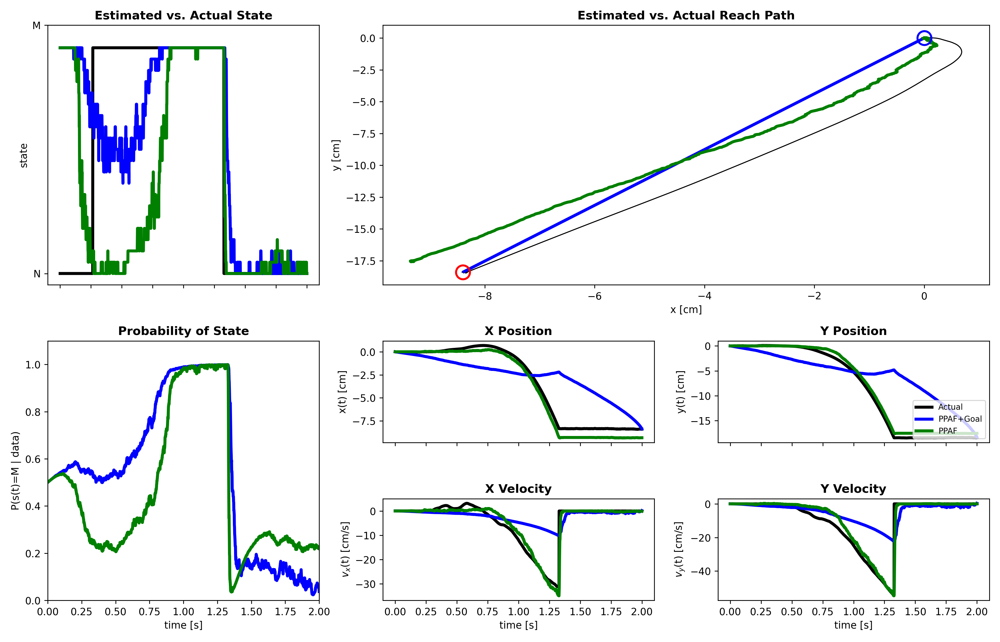
fig6 = plt.figure(figsize=(14, 9))
# Mean across simulations
mS_est = np.mean(result["S_estAll"], axis=0)
mS_estNT = np.mean(result["S_estNTAll"], axis=0)
mMU_est = np.mean(result["MU_estAll"][1, :, :], axis=1) # P(M|data) for goal
mMU_estNT = np.mean(result["MU_estNTAll"][1, :, :], axis=1) # P(M|data) for free
mX_est = np.mean(100 * result["X_estAll"], axis=2)
mX_estNT = np.mean(100 * result["X_estNTAll"], axis=2)
# Left column: state estimation + probability
# [1,4]: Estimated vs actual state
ax_s = fig6.add_subplot(4, 3, (1, 4))
ax_s.plot(time, mstate, "k", linewidth=3)
ax_s.plot(time, mS_est, "b", linewidth=3)
ax_s.plot(time, mS_estNT, "g", linewidth=3)
ax_s.set_yticks([1, 2.1])
ax_s.set_yticklabels(["N", "M"])
ax_s.set_xticklabels([])
ax_s.set_ylabel("state")
ax_s.set_title("Estimated vs. Actual State", fontweight="bold", fontsize=12)
# [7,10]: P(s(t)=M | data)
ax_prob = fig6.add_subplot(4, 3, (7, 10))
ax_prob.plot(time, mMU_est, "b", linewidth=3)
ax_prob.plot(time, mMU_estNT, "g", linewidth=3)
ax_prob.set_xlim(time[0], time[-1])
ax_prob.set_ylim(0, 1.1)
ax_prob.set_xlabel("time [s]")
ax_prob.set_ylabel("P(s(t)=M | data)")
ax_prob.set_title("Probability of State", fontweight="bold", fontsize=12)
# Right top [2,3,5,6]: 2D estimated vs actual reach path
ax_2d = fig6.add_subplot(4, 3, (2, 6))
ax_2d.plot(100 * X[0, :], 100 * X[1, :], "k", linewidth=1)
ax_2d.plot(mX_est[0, :], mX_est[1, :], "b", linewidth=3)
ax_2d.plot(mX_estNT[0, :], mX_estNT[1, :], "g", linewidth=3)
ax_2d.plot(100 * X[0, 0], 100 * X[1, 0], "bo", markersize=14,
markerfacecolor="none", markeredgewidth=2)
ax_2d.plot(100 * X[0, -1], 100 * X[1, -1], "ro", markersize=14,
markerfacecolor="none", markeredgewidth=2)
ax_2d.set_xlabel("x [cm]")
ax_2d.set_ylabel("y [cm]")
ax_2d.set_title("Estimated vs. Actual Reach Path",
fontweight="bold", fontsize=12)
# Bottom panels: per-state traces
# [8]: x(t)
ax_x = fig6.add_subplot(4, 3, 8)
ax_x.plot(time, 100 * X[0, :], "k", linewidth=3)
ax_x.plot(time, mX_est[0, :], "b", linewidth=3)
ax_x.plot(time, mX_estNT[0, :], "g", linewidth=3)
ax_x.set_ylabel("x(t) [cm]")
ax_x.set_xticklabels([])
ax_x.set_title("X Position", fontweight="bold", fontsize=12)
# [9]: y(t) with legend
ax_y = fig6.add_subplot(4, 3, 9)
h1, = ax_y.plot(time, 100 * X[1, :], "k", linewidth=3)
h2, = ax_y.plot(time, mX_est[1, :], "b", linewidth=3)
h3, = ax_y.plot(time, mX_estNT[1, :], "g", linewidth=3)
ax_y.legend([h1, h2, h3], ["Actual", "PPAF+Goal", "PPAF"],
loc="lower right", fontsize=8)
ax_y.set_ylabel("y(t) [cm]")
ax_y.set_xticklabels([])
ax_y.set_title("Y Position", fontweight="bold", fontsize=12)
# [11]: vx(t)
ax_vx = fig6.add_subplot(4, 3, 11)
ax_vx.plot(time, 100 * X[2, :], "k", linewidth=3)
ax_vx.plot(time, mX_est[2, :], "b", linewidth=3)
ax_vx.plot(time, mX_estNT[2, :], "g", linewidth=3)
ax_vx.set_ylabel("$v_x$(t) [cm/s]")
ax_vx.set_xlabel("time [s]")
ax_vx.set_title("X Velocity", fontweight="bold", fontsize=12)
# [12]: vy(t)
ax_vy = fig6.add_subplot(4, 3, 12)
ax_vy.plot(time, 100 * X[3, :], "k", linewidth=3)
ax_vy.plot(time, mX_est[3, :], "b", linewidth=3)
ax_vy.plot(time, mX_estNT[3, :], "g", linewidth=3)
ax_vy.set_ylabel("$v_y$(t) [cm/s]")
ax_vy.set_xlabel("time [s]")
ax_vy.set_title("Y Velocity", fontweight="bold", fontsize=12)
fig6.tight_layout()Question: How does a tensor-product B-spline Poisson GLM recover a known 2-D place field, and how do its rate and second-order diagnostics compare to an LGCP?
Simulates a 2-D inhomogeneous Poisson process from a known log-Gaussian rate, recovers the rate via bspline_basis_2d + fit_poisson_glm, fits a comparator via lgcp_fit_glm, and runs pair_correlation + global_envelope with isotropic edge correction.
Run: python examples/paper/example06_place_fields_glm_basis.py · Script · Figures directory
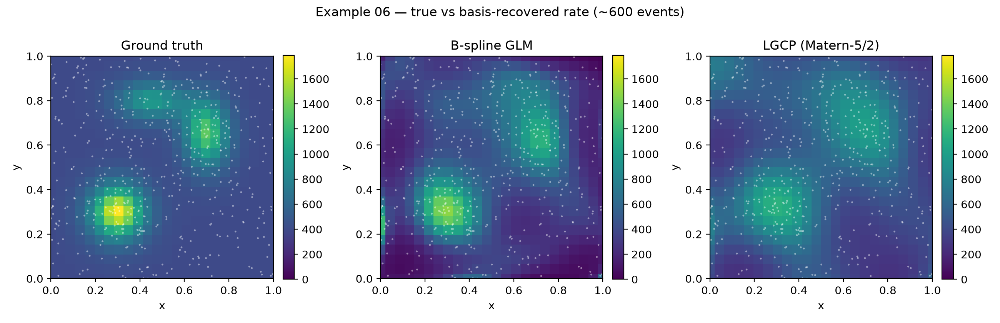
fig, axes = plt.subplots(1, 3, figsize=(13, 4.2))
titles = ("Ground truth", "B-spline GLM", "LGCP (Matern-5/2)")
for ax, field, title in zip(
axes, (rate_true, rate_basis_2d, rate_lgcp_2d), titles
):
im = ax.pcolormesh(
axis, axis, field.T, shading="auto", cmap="viridis",
vmin=0.0, vmax=vmax,
)
ax.scatter(pts[:, 0], pts[:, 1], s=3, color="w", alpha=0.45,
edgecolor="none")
ax.set_xlim(0, 1)
ax.set_ylim(0, 1)
ax.set_aspect("equal")
ax.set_title(title)
ax.set_xlabel("x")
ax.set_ylabel("y")
fig.colorbar(im, ax=ax, fraction=0.046, pad=0.04)
fig.suptitle("Example 06 — true vs basis-recovered rate (~600 events)")
fig.tight_layout()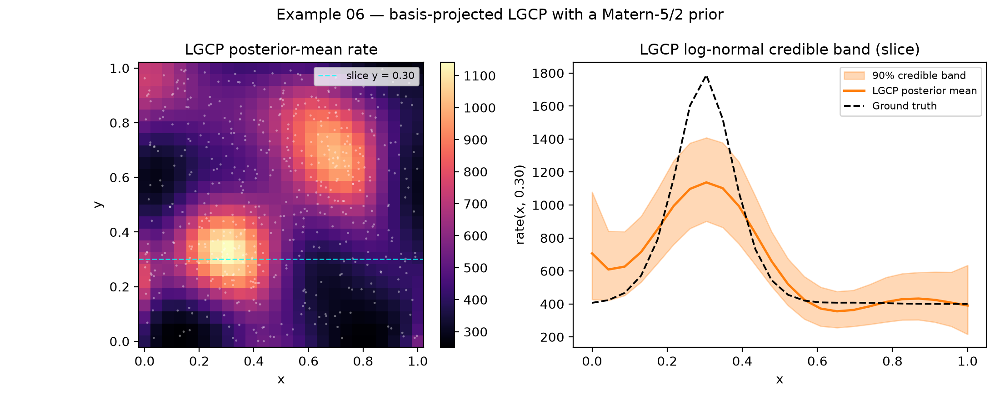
fig, axes = plt.subplots(1, 2, figsize=(11, 4.4))
im = axes[0].pcolormesh(axis, axis, mean_2d.T, shading="auto",
cmap="magma")
axes[0].scatter(pts[:, 0], pts[:, 1], s=3, color="w", alpha=0.4,
edgecolor="none")
axes[0].set_aspect("equal")
axes[0].set_xlabel("x")
axes[0].set_ylabel("y")
axes[0].set_title("LGCP posterior-mean rate")
fig.colorbar(im, ax=axes[0], fraction=0.046, pad=0.04)
axes[0].axhline(0.30, color="cyan", lw=1.0, ls="--", alpha=0.8,
label="slice y = 0.30")
axes[0].legend(loc="upper right", fontsize=8)
# Find the row of the analysis grid closest to y = 0.30.
j = int(np.argmin(np.abs(axis - 0.30)))
grid_pts = np.column_stack([axis, np.full_like(axis, axis[j])])
rate_true = _true_rate(grid_pts)
mean_slice = mean_2d[:, j]
lo_slice = lo_2d[:, j]
hi_slice = hi_2d[:, j]
axes[1].fill_between(axis, lo_slice, hi_slice, color="tab:orange",
alpha=0.30, label="90% credible band")
axes[1].plot(axis, mean_slice, color="tab:orange", lw=1.8,
label="LGCP posterior mean")
axes[1].plot(axis, rate_true, color="k", lw=1.4, ls="--",
label="Ground truth")
axes[1].set_xlabel("x")
axes[1].set_ylabel("rate(x, 0.30)")
axes[1].set_title("LGCP log-normal credible band (slice)")
axes[1].legend(loc="upper right", fontsize=8)
fig.suptitle("Example 06 — basis-projected LGCP with a Matern-5/2 prior")
fig.tight_layout()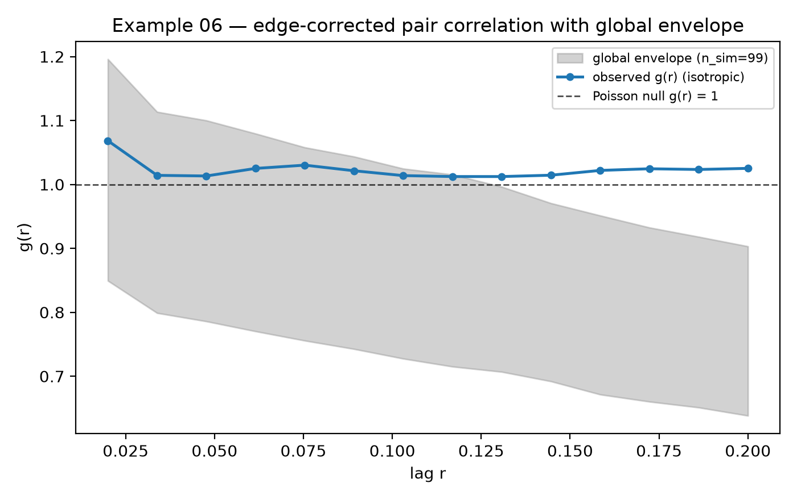
fig, ax = plt.subplots(figsize=(7.0, 4.4))
ax.fill_between(r_grid, env.lo, env.hi, color="gray", alpha=0.35,
label=f"global envelope (n_sim={env.n_sim})")
ax.plot(r_grid, g, color="tab:blue", lw=1.8, marker="o", ms=4,
label="observed g(r) (isotropic)")
ax.axhline(1.0, color="k", lw=1.0, ls="--", alpha=0.7,
label="Poisson null g(r) = 1")
ax.set_xlabel("lag r")
ax.set_ylabel("g(r)")
ax.set_title(
"Example 06 — edge-corrected pair correlation with global envelope"
)
ax.legend(loc="upper right", fontsize=8)
fig.tight_layout()Question: Can the Bartlett spectrum and wave-peak detector recover the speed and direction of a known planar wave embedded in a multivariate Hawkes triggering matrix?
Constructs a synthetic planar-wave Hawkes adjacency on a grid of electrodes, computes the bartlett_spectrum, runs detect_wave_peaks, and verifies the recovered wave speed and direction against the ground-truth construction.
Run: python examples/paper/example07_spatiotemporal_hawkes_waves.py · Script · Figures directory
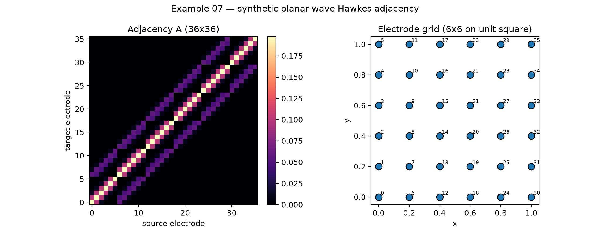
fig, axes = plt.subplots(1, 2, figsize=(11, 4.4))
im = axes[0].imshow(A, cmap="magma", aspect="equal", origin="lower")
axes[0].set_title(f"Adjacency A ({A.shape[0]}x{A.shape[1]})")
axes[0].set_xlabel("source electrode")
axes[0].set_ylabel("target electrode")
fig.colorbar(im, ax=axes[0], fraction=0.046, pad=0.04)
axes[1].scatter(pos[:, 0], pos[:, 1], s=80, color="tab:blue",
edgecolor="k")
for idx, (x, y) in enumerate(pos):
axes[1].text(x + 0.015, y + 0.015, str(idx), fontsize=7)
axes[1].set_xlim(-0.05, 1.05)
axes[1].set_ylim(-0.05, 1.05)
axes[1].set_aspect("equal")
axes[1].set_title(f"Electrode grid ({Cx}x{Cy} on unit square)")
axes[1].set_xlabel("x")
axes[1].set_ylabel("y")
fig.suptitle(
"Example 07 — synthetic planar-wave Hawkes adjacency"
)
fig.tight_layout()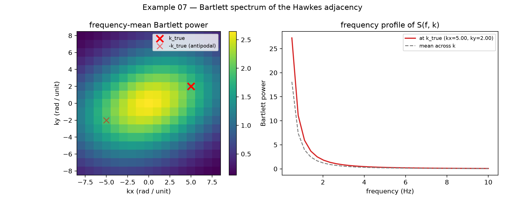
fig, axes = plt.subplots(1, 2, figsize=(11, 4.4))
im = axes[0].pcolormesh(
kx_axis, ky_axis, power_2d.T, shading="auto", cmap="viridis"
)
axes[0].scatter([k_true[0]], [k_true[1]], s=120, marker="x",
color="red", linewidths=2.5, label="k_true")
axes[0].scatter([-k_true[0]], [-k_true[1]], s=80, marker="x",
color="red", linewidths=1.5, alpha=0.5,
label="-k_true (antipodal)")
axes[0].set_xlabel("kx (rad / unit)")
axes[0].set_ylabel("ky (rad / unit)")
axes[0].set_title("frequency-mean Bartlett power")
axes[0].set_aspect("equal")
axes[0].legend(loc="upper right", fontsize=8)
fig.colorbar(im, ax=axes[0], fraction=0.046, pad=0.04)
# Frequency profile at the (kx, ky) cell closest to k_true.
ix = int(np.argmin(np.abs(kx_axis - k_true[0])))
iy = int(np.argmin(np.abs(ky_axis - k_true[1])))
k_idx_true = ix * ny + iy
profile_true = S[:, k_idx_true]
profile_mean = S.mean(axis=1)
axes[1].plot(freq, profile_true, color="tab:red", lw=1.8,
label=f"at k_true (kx={kx_axis[ix]:.2f}, ky={ky_axis[iy]:.2f})")
axes[1].plot(freq, profile_mean, color="tab:gray", lw=1.4, ls="--",
label="mean across k")
axes[1].set_xlabel("frequency (Hz)")
axes[1].set_ylabel("Bartlett power")
axes[1].set_title("frequency profile of S(f, k)")
axes[1].legend(loc="upper right", fontsize=8)
fig.suptitle("Example 07 — Bartlett spectrum of the Hawkes adjacency")
fig.tight_layout()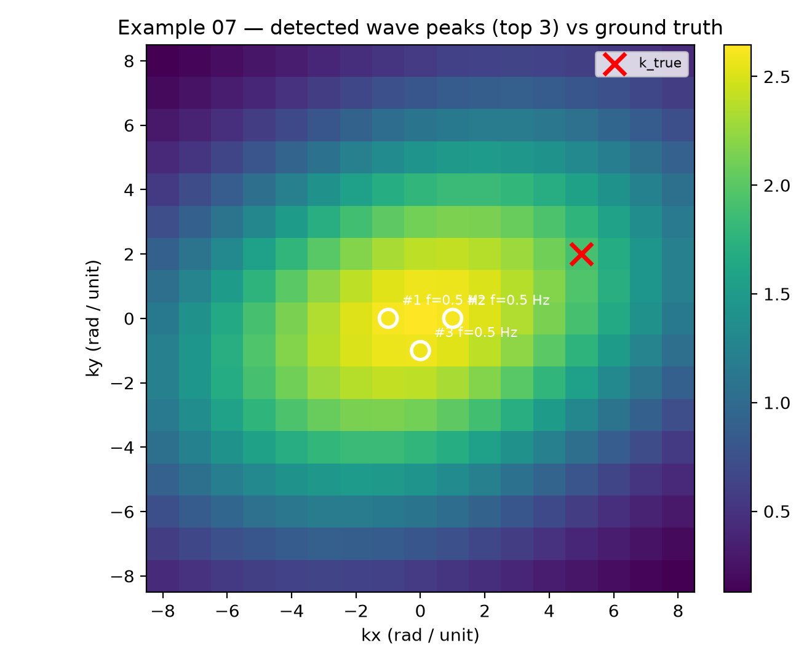
fig, ax = plt.subplots(figsize=(6.6, 5.4))
im = ax.pcolormesh(
kx_axis, ky_axis, power_2d.T, shading="auto", cmap="viridis"
)
fig.colorbar(im, ax=ax, fraction=0.046, pad=0.04)
ax.scatter([k_true[0]], [k_true[1]], s=160, marker="x", color="red",
linewidths=2.5, label="k_true")
for i in range(peaks.kx.size):
ax.scatter(peaks.kx[i], peaks.ky[i], s=110, marker="o",
facecolor="none", edgecolor="white", linewidths=2.0)
ax.annotate(
f"#{i+1} f={peaks.freq[i]:.1f} Hz",
(peaks.kx[i], peaks.ky[i]),
xytext=(8, 8), textcoords="offset points", color="white",
fontsize=8,
)
ax.set_xlabel("kx (rad / unit)")
ax.set_ylabel("ky (rad / unit)")
ax.set_aspect("equal")
ax.set_title(
f"Example 07 — detected wave peaks (top {peaks.kx.size}) "
"vs ground truth"
)
ax.legend(loc="upper right", fontsize=8)
fig.tight_layout()Question: Does a B-spline Poisson GLM trained on real hippocampal place cells produce a held-out spatial pair-correlation inside the inhomogeneous global-rank envelope, and a population rescaled-time ACF inside the Bartlett band?
Loads Animal 1 from the figshare paper dataset, fits a 4-cell B-spline Poisson GLM, decodes position with PPDecodeFilter on a 2-D random walk, and runs pair_correlation + global_envelope (isotropic) and rescaled_acf on the held-out half.
Run: python examples/paper/example08_real_place_cells.py · Script · Figures directory
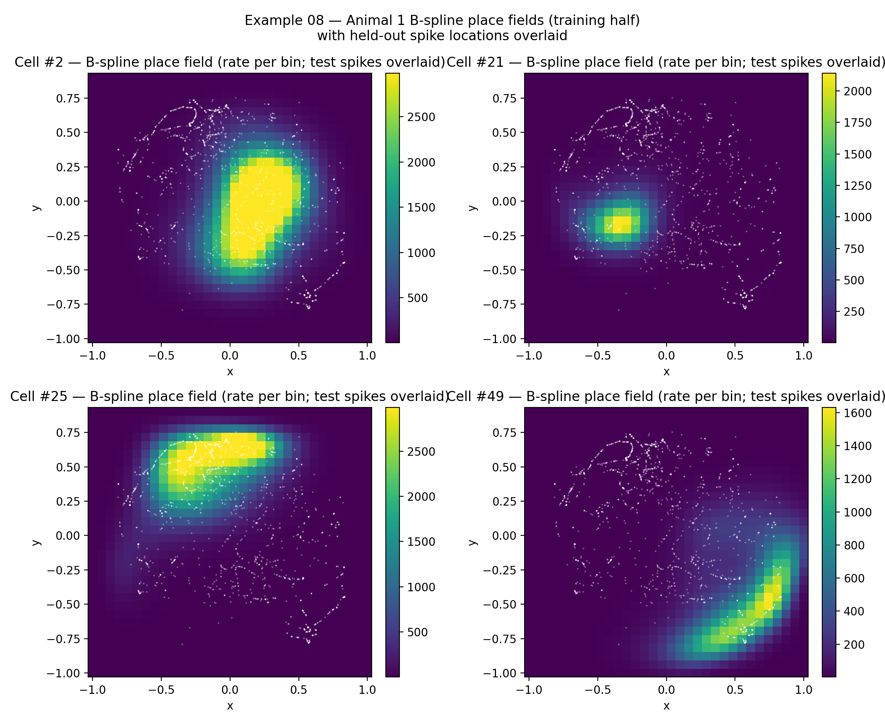
fig, axes = plt.subplots(2, 2, figsize=(11, 9))
axes = axes.ravel()
for i in range(min(n_cells, 4)):
ax = axes[i]
# ij-flattening convention: rows index x, cols index y.
# Transpose so that x runs across the figure and y vertically.
im = ax.pcolormesh(
grid_x, grid_y, rate_maps[i].T, shading="auto", cmap="viridis",
)
ax.scatter(pts_test[:, 0], pts_test[:, 1], s=2.0, c="w", alpha=0.35,
edgecolor="none")
ax.set_aspect("equal")
ax.set_xlabel("x")
ax.set_ylabel("y")
ax.set_title(
f"Cell #{cell_indices[i] + 1} — B-spline place field "
f"(rate per bin; test spikes overlaid)"
)
fig.colorbar(im, ax=ax, fraction=0.046, pad=0.04)
for j in range(n_cells, 4):
axes[j].axis("off")
fig.suptitle(
"Example 08 — Animal 1 B-spline place fields (training half)\n"
"with held-out spike locations overlaid"
)
fig.tight_layout()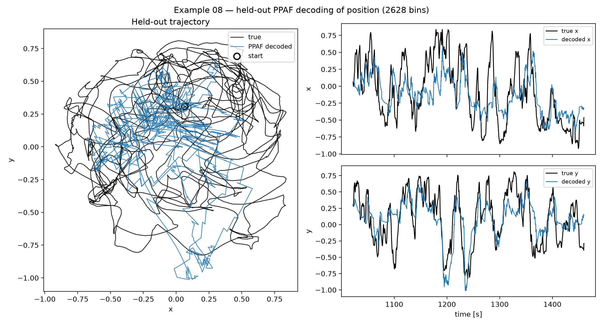
fig = plt.figure(figsize=(12.0, 6.5))
ax_path = fig.add_subplot(1, 2, 1)
ax_path.plot(pos_x_test, pos_y_test, "k-", lw=1.0, alpha=0.9, label="true")
ax_path.plot(x_dec[0], x_dec[1], color="tab:blue", lw=1.0, alpha=0.85,
label="PPAF decoded")
ax_path.scatter(pos_x_test[0], pos_y_test[0], s=80, marker="o",
edgecolor="k", facecolor="none", lw=1.8, label="start")
ax_path.set_xlabel("x")
ax_path.set_ylabel("y")
ax_path.set_aspect("equal")
ax_path.set_title("Held-out trajectory")
ax_path.legend(loc="upper right", fontsize=9)
ax_x = fig.add_subplot(2, 2, 2)
ax_x.plot(pos_time_test, pos_x_test, "k-", lw=1.2, label="true x")
ax_x.plot(pos_time_test, x_dec[0], color="tab:blue", lw=1.0,
label="decoded x")
ax_x.set_ylabel("x")
ax_x.legend(loc="upper right", fontsize=8)
ax_x.tick_params(labelbottom=False)
ax_y = fig.add_subplot(2, 2, 4)
ax_y.plot(pos_time_test, pos_y_test, "k-", lw=1.2, label="true y")
ax_y.plot(pos_time_test, x_dec[1], color="tab:blue", lw=1.0,
label="decoded y")
ax_y.set_xlabel("time [s]")
ax_y.set_ylabel("y")
ax_y.legend(loc="upper right", fontsize=8)
fig.suptitle(
"Example 08 — held-out PPAF decoding of position "
f"({len(pos_time_test)} bins)"
)
fig.tight_layout()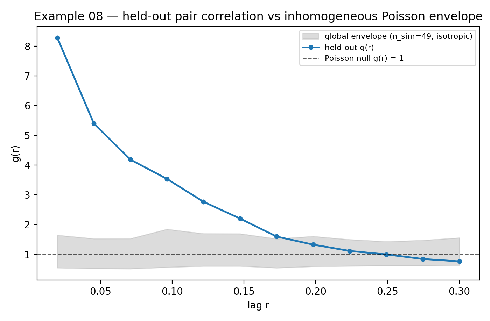
fig, ax = plt.subplots(figsize=(7.0, 4.6))
ax.fill_between(r_grid, env.lo, env.hi, color="0.7", alpha=0.45,
label=f"global envelope (n_sim={env.n_sim}, isotropic)")
ax.plot(r_grid, g, color="tab:blue", lw=1.8, marker="o", ms=4,
label="held-out g(r)")
ax.axhline(1.0, color="k", ls="--", lw=1.0, alpha=0.7,
label="Poisson null g(r) = 1")
ax.set_xlabel("lag r")
ax.set_ylabel("g(r)")
ax.set_title(
"Example 08 — held-out pair correlation vs inhomogeneous "
"Poisson envelope"
)
ax.legend(loc="upper right", fontsize=8)
fig.tight_layout()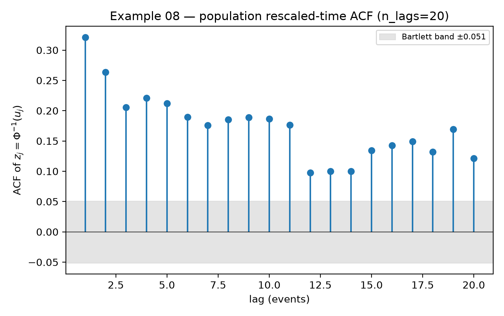
fig, ax = plt.subplots(figsize=(7.0, 4.4))
ax.axhspan(-acf_result.band, acf_result.band, color="0.85", alpha=0.7,
label=f"Bartlett band ±{acf_result.band:.3f}")
ax.stem(acf_result.lags, acf_result.acf, basefmt=" ")
ax.axhline(0.0, color="k", lw=0.8, alpha=0.7)
ax.set_xlabel("lag (events)")
ax.set_ylabel(r"ACF of $z_j = \Phi^{-1}(u_j)$")
ax.set_title(
"Example 08 — population rescaled-time ACF "
f"(n_lags={acf_result.lags.size})"
)
ax.legend(loc="upper right", fontsize=8)
fig.tight_layout()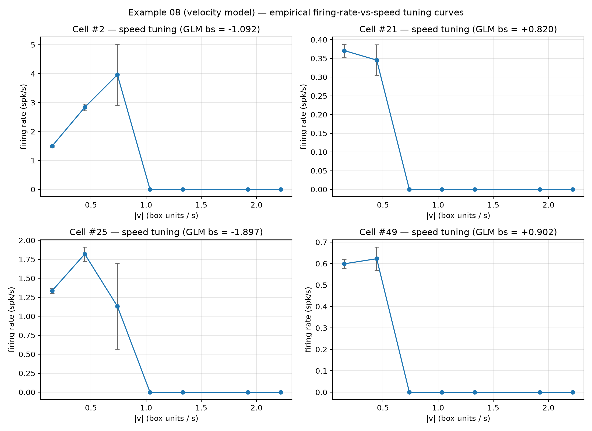
fig, axes = plt.subplots(2, 2, figsize=(11, 8))
axes = axes.ravel()
for i in range(min(n_cells, 4)):
ax = axes[i]
r = rate_per_cell[i]
s = sem_per_cell[i]
finite = np.isfinite(r)
ax.errorbar(
bin_centers[finite], r[finite], yerr=s[finite],
marker="o", ms=5, lw=1.4, color="tab:blue",
ecolor="0.4", capsize=3, label="binned rate",
)
ax.set_xlabel("|v| (box units / s)")
ax.set_ylabel("firing rate (spk/s)")
ax.set_title(
f"Cell #{cell_indices[i] + 1} — speed tuning "
f"(GLM bs = {speed_coefs[i]:+.3f})"
)
ax.grid(True, alpha=0.3)
for j in range(n_cells, 4):
axes[j].axis("off")
fig.suptitle(
"Example 08 (velocity model) — empirical firing-rate-vs-speed "
"tuning curves"
)
fig.tight_layout()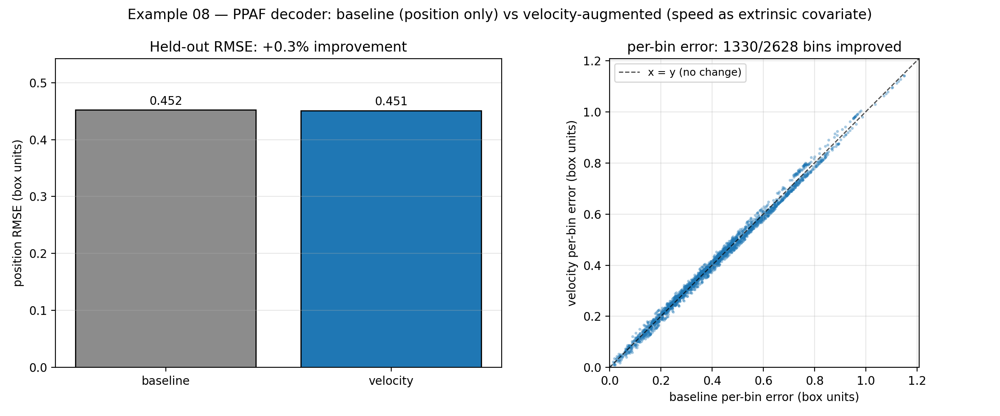
fig, axes = plt.subplots(1, 2, figsize=(12.0, 5.0))
# Panel 1: bar chart.
ax_bar = axes[0]
bars = ax_bar.bar(
["baseline", "velocity"],
[baseline_rmse, velocity_rmse],
color=["0.55", "tab:blue"], edgecolor="k", lw=1.0,
)
for bar, val in zip(bars, [baseline_rmse, velocity_rmse]):
ax_bar.text(
bar.get_x() + bar.get_width() / 2.0,
bar.get_height() + 0.005,
f"{val:.3f}",
ha="center", va="bottom", fontsize=10,
)
sign = "+" if improvement_pct >= 0.0 else ""
ax_bar.set_ylabel("position RMSE (box units)")
ax_bar.set_title(
f"Held-out RMSE: {sign}{improvement_pct:.1f}% improvement"
)
ax_bar.set_ylim(0.0, max(baseline_rmse, velocity_rmse) * 1.20)
ax_bar.grid(True, alpha=0.3, axis="y")
# Panel 2: per-bin error scatter (baseline x, velocity y). Both
# error vectors are on the same time base by construction.
ax_sc = axes[1]
lim_hi = float(
max(baseline_per_bin_err.max(), velocity_per_bin_err.max()) * 1.05
)
ax_sc.plot([0, lim_hi], [0, lim_hi], "k--", lw=1.0, alpha=0.7,
label="x = y (no change)")
ax_sc.scatter(
baseline_per_bin_err, velocity_per_bin_err,
s=6, alpha=0.4, color="tab:blue", edgecolor="none",
)
improved = int(np.sum(velocity_per_bin_err < baseline_per_bin_err))
total = int(baseline_per_bin_err.size)
ax_sc.set_xlabel("baseline per-bin error (box units)")
ax_sc.set_ylabel("velocity per-bin error (box units)")
ax_sc.set_xlim(0.0, lim_hi)
ax_sc.set_ylim(0.0, lim_hi)
ax_sc.set_aspect("equal")
ax_sc.set_title(f"per-bin error: {improved}/{total} bins improved")
ax_sc.legend(loc="upper left", fontsize=9)
ax_sc.grid(True, alpha=0.3)
fig.suptitle(
"Example 08 — PPAF decoder: baseline (position only) vs "
"velocity-augmented (speed as extrinsic covariate)"
)
fig.tight_layout()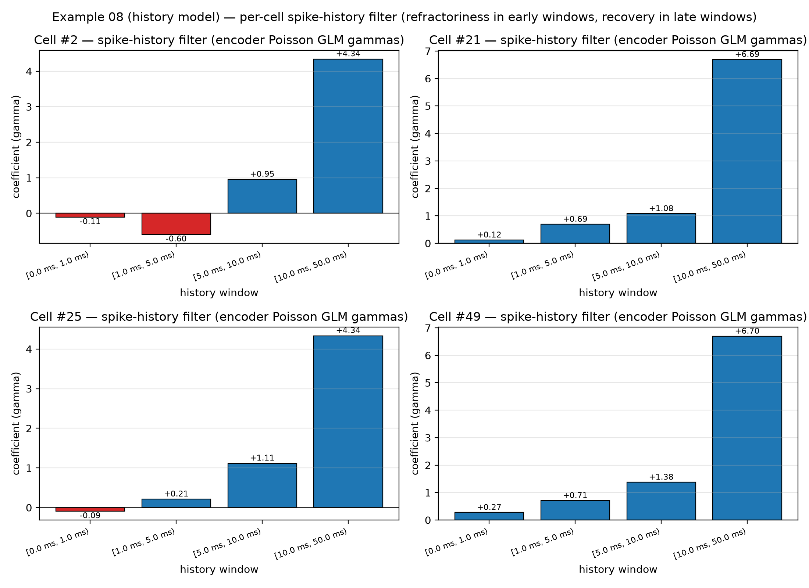
fig, axes = plt.subplots(2, 2, figsize=(11, 8))
axes = axes.ravel()
for i in range(min(n_cells, 4)):
ax = axes[i]
coefs = np.asarray(history_coefs[i], dtype=float).reshape(-1)
colors = ["tab:red" if v < 0 else "tab:blue" for v in coefs]
ax.bar(
range(coefs.size), coefs,
color=colors, edgecolor="k", lw=0.8,
)
ax.axhline(0.0, color="k", lw=0.8, alpha=0.8)
ax.set_xticks(range(coefs.size))
ax.set_xticklabels(labels, rotation=20, ha="right", fontsize=8)
ax.set_xlabel("history window")
ax.set_ylabel("coefficient (gamma)")
ax.set_title(
f"Cell #{cell_indices[i] + 1} — spike-history filter "
f"(encoder Poisson GLM gammas)"
)
ax.grid(True, alpha=0.3, axis="y")
# Annotate each bar with its value for at-a-glance reading.
for x_pos, val, w in zip(range(coefs.size), coefs, widths_ms):
del w
ax.text(
x_pos, val + 0.02 * np.sign(val) if val != 0 else 0.02,
f"{val:+.2f}",
ha="center", va="bottom" if val >= 0 else "top",
fontsize=8,
)
for j in range(n_cells, 4):
axes[j].axis("off")
fig.suptitle(
"Example 08 (history model) — per-cell spike-history filter "
"(refractoriness in early windows, recovery in late windows)"
)
fig.tight_layout()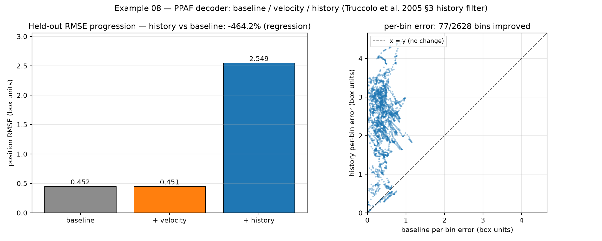
fig, axes = plt.subplots(1, 2, figsize=(12.5, 5.0))
# Panel 1: per-cell encoder log-likelihood, baseline vs history.
ax_logL = axes[0]
xs = np.arange(n_cells, dtype=float)
width = 0.38
ax_logL.bar(
xs - width / 2, logL_baseline, width=width,
color="0.55", edgecolor="k", lw=1.0, label="baseline (B-spline)",
)
ax_logL.bar(
xs + width / 2, logL_history, width=width,
color="tab:blue", edgecolor="k", lw=1.0,
label="+ history (B-spline + 4 windows)",
)
for i, (lb, lh) in enumerate(zip(logL_baseline, logL_history)):
gain = lh - lb
ax_logL.text(
float(i), max(lb, lh) + 0.02 * abs(max(lb, lh) or 1.0),
f"{gain:+.1f}", ha="center", va="bottom", fontsize=8,
)
ax_logL.set_xticks(xs)
ax_logL.set_xticklabels(cell_labels)
ax_logL.set_xlabel("cell (MATLAB-style 1-indexed)")
ax_logL.set_ylabel("encoder log-likelihood")
n_logL_improved = int(
sum(lh > lb for lb, lh in zip(logL_baseline, logL_history))
)
ax_logL.set_title(
"Encoder Poisson-GLM log-likelihood: baseline vs +history\n"
f"(gain annotated; both fits at l2=10 for fair comparison; "
f"{n_logL_improved}/{n_cells} cells improved)"
)
ax_logL.legend(loc="best", fontsize=8)
ax_logL.grid(True, alpha=0.3, axis="y")
# Panel 2: per-cell refractoriness gamma ([1, 5 ms) window).
ax_g = axes[1]
gammas = np.asarray(refractory_gammas, dtype=float)
colors = ["tab:red" if g < 0 else "tab:blue" for g in gammas]
bars = ax_g.bar(
xs, gammas, color=colors, edgecolor="k", lw=1.0,
)
for bar, g in zip(bars, gammas):
ax_g.text(
bar.get_x() + bar.get_width() / 2.0,
g + (0.02 * np.sign(g) if g != 0.0 else 0.02),
f"{g:+.2f}",
ha="center", va="bottom" if g >= 0 else "top",
fontsize=9,
)
ax_g.axhline(0.0, color="k", lw=0.8, alpha=0.8)
n_refract = int(np.sum(gammas < 0.0))
ax_g.set_xticks(xs)
ax_g.set_xticklabels(cell_labels)
ax_g.set_xlabel("cell (MATLAB-style 1-indexed)")
ax_g.set_ylabel(f"encoder gamma in {window_label}")
ax_g.set_title(
f"Refractoriness diagnostic: {n_refract}/{n_cells} cells with "
f"negative gamma\n(red = refractory signature; blue = recovery)"
)
ax_g.grid(True, alpha=0.3, axis="y")
fig.suptitle(
"Example 08 — encoder fit quality with spike history\n"
"(Truccolo et al. 2005 §3 history filter, fit at 1 kHz; "
"decoder unchanged at 33 ms lattice)"
)
fig.tight_layout()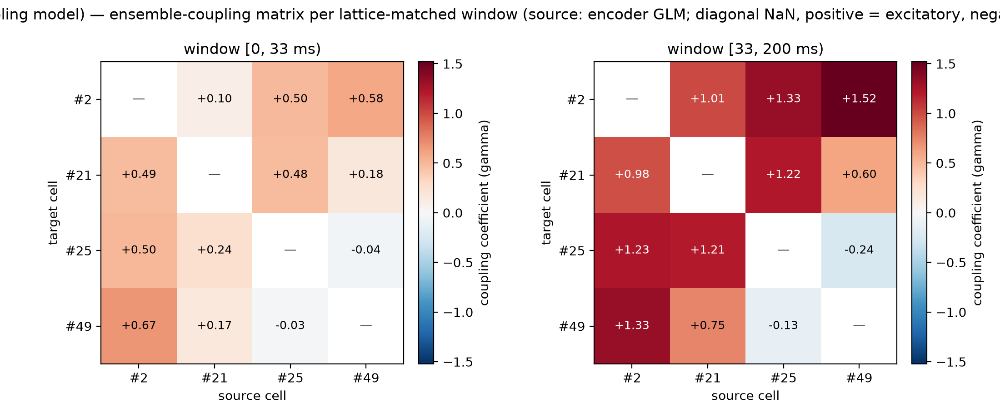
fig, axes = plt.subplots(1, n_windows, figsize=(11.0, 4.6))
if n_windows == 1:
axes = np.array([axes])
for w_idx in range(n_windows):
ax = axes[w_idx]
M = coupling_matrix[:, :, w_idx]
# Display with rows = targets (top → bottom), cols = sources.
im = ax.imshow(
M, cmap="RdBu_r", vmin=-vmax, vmax=vmax,
aspect="equal", interpolation="nearest",
)
ax.set_xticks(range(n_cells))
ax.set_yticks(range(n_cells))
ax.set_xticklabels(labels)
ax.set_yticklabels(labels)
ax.set_xlabel("source cell")
ax.set_ylabel("target cell")
lo_ms, hi_ms = (
window_times_s[w_idx][0] * 1000.0,
window_times_s[w_idx][1] * 1000.0,
)
ax.set_title(f"window [{lo_ms:.0f}, {hi_ms:.0f} ms)")
# Annotate each non-NaN cell with its coefficient.
for i in range(n_cells):
for j in range(n_cells):
v = M[i, j]
if np.isnan(v):
ax.text(
j, i, "—", ha="center", va="center",
color="0.3", fontsize=10,
)
else:
txt_color = "k" if abs(v) < 0.6 * vmax else "w"
ax.text(
j, i, f"{v:+.2f}", ha="center", va="center",
color=txt_color, fontsize=9,
)
cbar = fig.colorbar(im, ax=ax, fraction=0.046, pad=0.04)
cbar.set_label("coupling coefficient (gamma)")
fig.suptitle(
"Example 08 (coupling model) — ensemble-coupling matrix "
f"per lattice-matched window (source: {source_label} GLM; "
"diagonal NaN, positive = excitatory, negative = inhibitory)"
)
fig.tight_layout()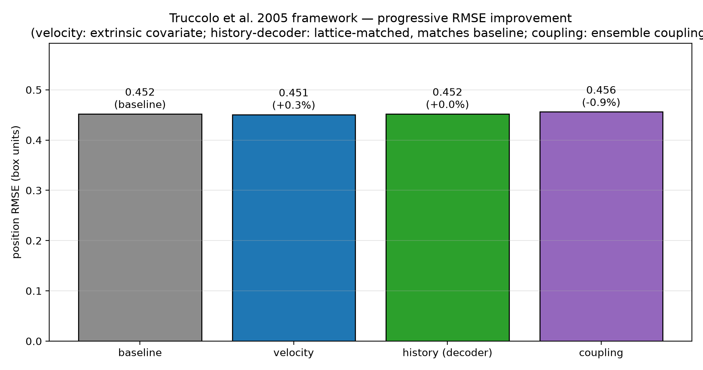
fig, ax = plt.subplots(figsize=(9.5, 5.0))
bars = ax.bar(
labels, rmses, color=colors, edgecolor="k", lw=1.0,
)
for bar, val, lab in zip(bars, rmses, labels):
improvement = 100.0 * (baseline_rmse - val) / baseline_rmse
sign = "+" if improvement >= 0.0 else ""
if lab == "baseline":
annot = f"{val:.3f}\n(baseline)"
else:
annot = f"{val:.3f}\n({sign}{improvement:.1f}%)"
ax.text(
bar.get_x() + bar.get_width() / 2.0,
bar.get_height() + 0.005,
annot,
ha="center", va="bottom", fontsize=10,
)
ax.set_ylabel("position RMSE (box units)")
ax.set_title(
"Truccolo et al. 2005 framework — progressive RMSE improvement\n"
"(velocity: extrinsic covariate; history-decoder: lattice-matched, "
"matches baseline; coupling: ensemble coupling)"
)
ax.set_ylim(0.0, max(rmses) * 1.30)
ax.grid(True, alpha=0.3, axis="y")
fig.tight_layout()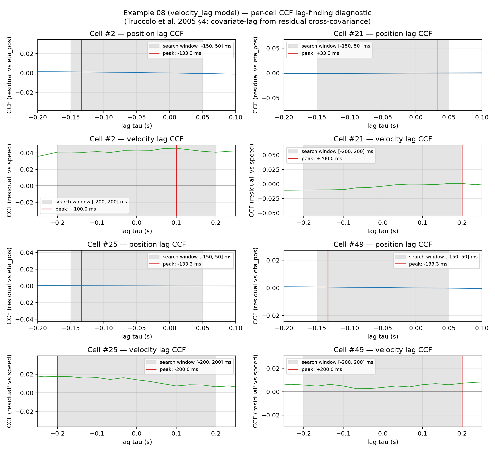
fig, axes = plt.subplots(
4, 2, figsize=(11.5, 10.5), sharex=False, sharey=False,
)
for i in range(min(n_cells, 4)):
col = i % 2
row_top = 2 * (i // 2)
row_bot = row_top + 1
ax_top = axes[row_top, col]
ax_bot = axes[row_bot, col]
lags_p, ccf_p = ccf_pos[i]
ax_top.axvspan(window_pos[0], window_pos[1], color="0.85", alpha=0.7,
label=(
f"search window "
f"[{int(window_pos[0] * 1000)}, "
f"{int(window_pos[1] * 1000)}] ms"
))
ax_top.plot(lags_p, ccf_p, color="tab:blue", lw=1.0)
ax_top.axvline(lag_pos_per_cell[i], color="tab:red", lw=1.4,
label=f"peak: {lag_pos_per_cell[i] * 1000:+.1f} ms")
ax_top.axhline(0.0, color="k", lw=0.8, alpha=0.7)
ax_top.set_xlim(window_pos[0] - 0.05, window_pos[1] + 0.05)
ax_top.set_xlabel("lag tau (s)")
ax_top.set_ylabel("CCF (residual vs eta_pos)")
ax_top.set_title(
f"Cell #{cell_indices[i] + 1} — position lag CCF"
)
ax_top.legend(loc="best", fontsize=8)
ax_top.grid(True, alpha=0.3)
lags_v, ccf_v = ccf_vel[i]
ax_bot.axvspan(window_vel[0], window_vel[1], color="0.85", alpha=0.7,
label=(
f"search window "
f"[{int(window_vel[0] * 1000)}, "
f"{int(window_vel[1] * 1000)}] ms"
))
ax_bot.plot(lags_v, ccf_v, color="tab:green", lw=1.0)
ax_bot.axvline(lag_vel_per_cell[i], color="tab:red", lw=1.4,
label=f"peak: {lag_vel_per_cell[i] * 1000:+.1f} ms")
ax_bot.axhline(0.0, color="k", lw=0.8, alpha=0.7)
ax_bot.set_xlim(window_vel[0] - 0.05, window_vel[1] + 0.05)
ax_bot.set_xlabel("lag tau (s)")
ax_bot.set_ylabel("CCF (residual' vs speed)")
ax_bot.set_title(
f"Cell #{cell_indices[i] + 1} — velocity lag CCF"
)
ax_bot.legend(loc="best", fontsize=8)
ax_bot.grid(True, alpha=0.3)
fig.suptitle(
"Example 08 (velocity_lag model) — per-cell CCF lag-finding "
"diagnostic\n(Truccolo et al. 2005 §4: covariate-lag from "
"residual cross-covariance)"
)
fig.tight_layout()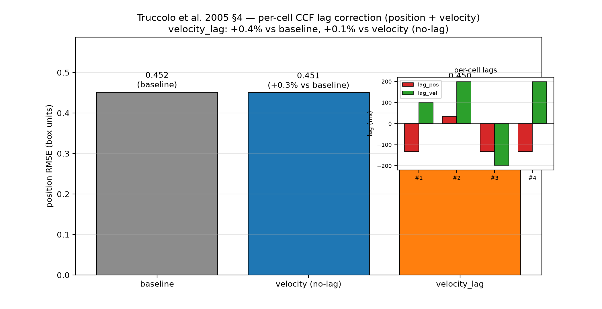
fig, ax = plt.subplots(figsize=(10.5, 5.4))
labels = ["baseline", "velocity (no-lag)", "velocity_lag"]
rmses = [baseline_rmse, velocity_rmse, velocity_lag_rmse]
colors = ["0.55", "tab:blue", "tab:orange"]
bars = ax.bar(labels, rmses, color=colors, edgecolor="k", lw=1.0)
for bar, val, lab in zip(bars, rmses, labels):
if lab == "baseline":
annot = f"{val:.3f}\n(baseline)"
else:
imp = 100.0 * (baseline_rmse - val) / baseline_rmse
sign = "+" if imp >= 0.0 else ""
annot = f"{val:.3f}\n({sign}{imp:.1f}% vs baseline)"
ax.text(
bar.get_x() + bar.get_width() / 2.0,
bar.get_height() + 0.005,
annot,
ha="center", va="bottom", fontsize=10,
)
ax.set_ylabel("position RMSE (box units)")
sign_b = "+" if improvement_vs_baseline >= 0.0 else ""
sign_v = "+" if improvement_vs_velocity >= 0.0 else ""
ax.set_title(
"Truccolo et al. 2005 §4 — per-cell CCF lag correction "
"(position + velocity)\n"
f"velocity_lag: {sign_b}{improvement_vs_baseline:.1f}% vs baseline, "
f"{sign_v}{improvement_vs_velocity:.1f}% vs velocity (no-lag)"
)
ax.set_ylim(0.0, max(rmses) * 1.30)
ax.grid(True, alpha=0.3, axis="y")
# Inset: per-cell lag values in ms.
inset = fig.add_axes([0.66, 0.45, 0.26, 0.30])
n_cells = len(lag_pos_per_cell)
xs = np.arange(n_cells, dtype=float)
width = 0.38
inset.bar(
xs - width / 2, [v * 1000.0 for v in lag_pos_per_cell],
width=width, color="tab:red", edgecolor="k", lw=0.6,
label="lag_pos",
)
inset.bar(
xs + width / 2, [v * 1000.0 for v in lag_vel_per_cell],
width=width, color="tab:green", edgecolor="k", lw=0.6,
label="lag_vel",
)
inset.axhline(0.0, color="k", lw=0.8, alpha=0.7)
inset.set_xticks(xs)
inset.set_xticklabels([f"#{i+1}" for i in range(n_cells)], fontsize=7)
inset.set_ylabel("lag (ms)", fontsize=8)
inset.tick_params(axis="y", labelsize=7)
inset.legend(loc="best", fontsize=7)
inset.set_title("per-cell lags", fontsize=9)
inset.grid(True, alpha=0.3, axis="y")